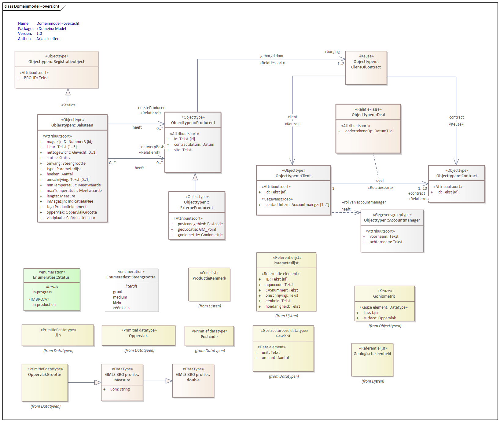
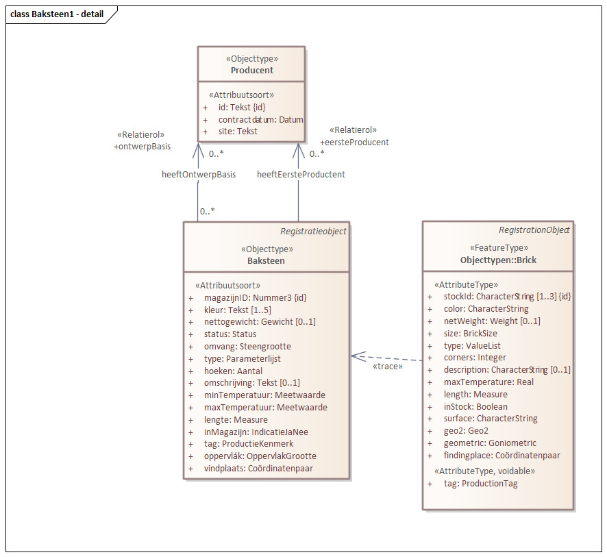
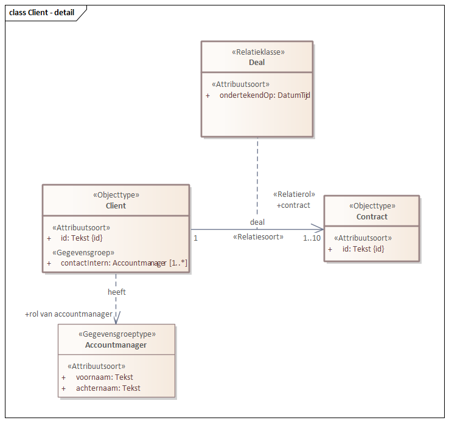

Conceptual model/SampleBase (SAMPLE)/20130319
Imvertor: Nightly-build.0
Model release: Conceptualmodel-SampleBaseSAMPLE-1.0.0-2-20130319-20250118-110952
| Naam | Baksteen |
|---|---|
| Code | SAMPLE-REGOBJECT-CODE |
| Definitie |
Het geheel van gegevens dat betrekking heeft op baksteenproductie. |
| Populatie | heel veel |

Domeinmodel
Overzicht van alle constructies in dit conceptuele model.

| Type gegeven | Entiteit |
|---|---|
| Herkomst | Herkomst.... |
| Definitie |
Een onderdeel van een bouwwerk met een rechthoekige vorm, bedoeld om muren mee te maken. |
| Herkomst definitie | Herkomst definitie... |
| Regels |
Regels tav bakstenen |
| Regels IMBRO/A |
Regels IMBRO/A tav bakstenen |
| Toelichting |
Een baksteen is een soort bouwmateriaal, maar alléén als het uit klei is gemaakt door mensen. Water formuleren we als H2O. Daarin zit geen CO2. Water formuleren we als H2O. Daarin zit geen CO2. |
| Type gegeven | Attribuut van Baksteen |
|---|---|
| Herkomst definitie | https://armatiek.nl/ |
| Kardinaliteit | 1 |
| Domein | |
| Naam | Tekst |
| Materiële geschiedenis | Nee |
| Type gegeven | Attribuut van Baksteen |
|---|---|
| Herkomst | Herkomst.... |
| Definitie |
De identificatie van de baksteen in het magazijn. |
| Herkomst definitie | Herkomst definitie... |
| Juridische status | Landelijk kerngegeven |
| Kardinaliteit | 1 |
| Domein | |
| Naam | Nummer3 |
| Regels | Regel mbt het magazijnID |
| Materiële geschiedenis | Nee |
| Mogelijk geen waarde | Ja |
| Reden geen waarde |
Dit is de reden waarom dit attribuut wellicht geen waarde heeft. |
| Toelichting | Toelichting... |
| Identificerend | Ja |
| Type gegeven | Attribuut van Baksteen |
|---|---|
| Herkomst | Ergens vandaan |
| Definitie |
De kleur van de baksteen; meerdere kleuren kunnen hier worden beschreven, in aflopende relevantie. |
| Herkomst definitie | Ook ergens vandaan |
| Juridische status | Niet-authentiek |
| Kardinaliteit | 1..5 |
| Domein | |
| Naam | Tekst |
| Regels |
Dit zijn de regels die gelden voor de kleur. |
| Regels IMBRO/A |
Dit zijn de IMBRO/A regels die gelden voor de kleur. |
| Materiële geschiedenis | Nee |
| Type gegeven | Attribuut van Baksteen |
|---|---|
| Definitie |
Het droog gewicht van de baksteen. |
| Juridische status | Authentiek |
| Kardinaliteit | 0..1 |
| Domein | |
| Naam | Gewicht |
| Materiële geschiedenis | Nee |
| Is afgeleid | Ja |
| Type gegeven | Attribuut van Baksteen |
|---|---|
| Kardinaliteit | 1 |
| Domein | |
| Naam | Status |
| Materiële geschiedenis | Nee |
| Type gegeven | Attribuut van Baksteen |
|---|---|
| Definitie |
De omvang van de baksteen. |
| Kardinaliteit | 1 |
| Domein | |
| Naam | Steengrootte |
| Materiële geschiedenis | Nee |
| Toelichting |
Uitgedrukt in steengrootte. |
| Type gegeven | Attribuut van Baksteen |
|---|---|
| Definitie |
Type baksteen. |
| Kardinaliteit | 1 |
| Domein | |
| Naam | Parameterlijst |
| Type | Waardelijst uitbreidbaar |
| Identificerend gegeven | ID |
| Materiële geschiedenis | Nee |
| Type gegeven | Attribuut van Baksteen |
|---|---|
| Definitie |
Het aantal hoeken van de baksteen. |
| Kardinaliteit | 1 |
| Domein | |
| Naam | Aantal |
| Materiële geschiedenis | Nee |
| Toelichting |
Dit moet een getal deelbaar door 8 zijn. |
| Type gegeven | Attribuut van Baksteen |
|---|---|
| Definitie |
Natuurlijke taal omschrijving van dit type baksteen. |
| Kardinaliteit | 0..1 |
| Domein | |
| Naam | Tekst |
| Materiële geschiedenis | Nee |
| Type gegeven | Attribuut van Baksteen |
|---|---|
| Juridische status | Authentiek |
| Kardinaliteit | 1 |
| Domein | |
| Naam | Meetwaarde 999 |
| Eenheid | cm3 (kubieke centimeter) |
| Waardebereik | 8 tot 200 |
| Materiële geschiedenis | Nee |
| Type gegeven | Attribuut van Baksteen |
|---|---|
| Definitie |
De max temperatuur die de baksteen kan verdragen in de praktijk. |
| Kardinaliteit | 1 |
| Domein | |
| Naam | Meetwaarde 3.8 in machten |
| Waardebereik | 3·10-2 (en niet minder) tot 1.00·10-12 |
| Materiële geschiedenis | Nee |
| Type gegeven | Attribuut van Baksteen |
|---|---|
| Definitie |
De lengte van de baksteen, dus volgens de langste zijde. |
| Kardinaliteit | 1 |
| Domein | |
| Naam | Measure |
| Materiële geschiedenis | Nee |
| Toelichting |
Lengte in meters. |
| Type gegeven | Attribuut van Baksteen |
|---|---|
| Definitie |
Is de baksteen nog beschikbaar/leverbaar? |
| Kardinaliteit | 1 |
| Domein | |
| Naam | IndicatieJaNee |
| Type | Waardelijst niet uitbreidbaar |
| Materiële geschiedenis | Nee |
| Type gegeven | Attribuut van Baksteen |
|---|---|
| Definitie |
Een kenmerk waarin wordt uigedrukt welk type productie deze steen heeft voortgebracht. |
| Kardinaliteit | 1 |
| Domein | |
| Naam | ProductieKenmerk |
| Type | Waardelijst uitbreidbaar |
| Materiële geschiedenis | Nee |
| Type gegeven | Attribuut van Baksteen |
|---|---|
| Definitie |
De oppervlakte van de steen. |
| Kardinaliteit | 1 |
| Domein | |
| Naam | OppervlakGrootte |
| Materiële geschiedenis | Nee |
| Toelichting |
Dit is de oppervlakte van de grootste zijde. |
| Type gegeven | Attribuut van Baksteen |
|---|---|
| Juridische status | Authentiek |
| Kardinaliteit | 1 |
| Domein | |
| Naam | Coördinatenpaar |
| Materiële geschiedenis | Nee |
| Type gegeven | Associatie van Baksteen |
|---|---|
| Definitie |
De steen is ontworpen door een producent, die daarvoor de basis heeft gelegd. |
| Kardinaliteit | 0..* |
| Relatiesoort naam | heeftOntwerpBasis |
| Relatierol naam | ontwerpBasis |
| Bron | Baksteen |
| Doel | Producent |
| Materiële geschiedenis | Nee |
| Type gegeven | Associatie van Baksteen |
|---|---|
| Definitie |
De eerste producent is de maker die als eerste met de baksteen op de markt is gekomen, en de steen nog levert. |
| Kardinaliteit | 0..* |
| Relatiesoort naam | heeftEersteProductent |
| Relatierol naam | eersteProducent |
| Bron | Baksteen |
| Doel | Producent |
| Regels |
Regels op rol eersteProducent |
| Regels IMBRO/A |
Regels IMBRO/A op rol eersteProducent |
| Materiële geschiedenis | Nee |
| Type gegeven | Entiteit |
|---|---|
| Definitie |
De instantie die de baksteen heeft geproduceerd en/of ontworpen. |
| Type gegeven | Attribuut van Producent |
|---|---|
| Definitie |
Identificatie van de producent. |
| Kardinaliteit | 1 |
| Domein | |
| Naam | Tekst |
| Materiële geschiedenis | Nee |
| Identificerend | Ja |
| Type gegeven | Attribuut van Producent |
|---|---|
| Definitie |
Datum waarop het contract is afgesloten. |
| Kardinaliteit | 1 |
| Domein | |
| Naam | Datum |
| Naam IMBRO/A | OnvolledigeDatum |
| Materiële geschiedenis | Nee |
| Type gegeven | Attribuut van Producent |
|---|---|
| Definitie |
Website van de producent. |
| Kardinaliteit | 1 |
| Domein | |
| Naam | Tekst |
| Materiële geschiedenis | Nee |
| Toelichting |
De website moet publiek toegankelijk zijn. |
| Type gegeven | Associatie van Producent |
|---|---|
| Kardinaliteit | 1..2 |
| Relatiesoort naam | geborgd door |
| Relatierol naam | borging |
| Bron | Producent |
| Doel | Keuze uit Contract, Client |
| Type gegeven | Entiteit |
|---|---|
| Definitie |
De producent die niet op het terein van het bakstenen distributiecentrum is gelegen. |
| Type gegeven | Attribuut van ExterneProducent |
|---|---|
| Definitie |
Postcodegebied van de producent. |
| Kardinaliteit | 1 |
| Domein | |
| Naam | Postcode |
| Materiële geschiedenis | Nee |
| Type gegeven | Attribuut van ExterneProducent |
|---|---|
| Definitie |
De locatie waar de producent is gevestigd. |
| Kardinaliteit | 1 |
| Domein | |
| Naam | GM_Point |
| Materiële geschiedenis | Nee |
| Toelichting |
Het betreft hier het hoofdkantoor van de betreffende producent. |
| Type gegeven | Attribuut van ExterneProducent |
|---|---|
| Definitie |
Goniometrische beschrijving van de producent in de routekaart. |
| Kardinaliteit | 1 |
| Domein | |
| Naam | Goniometric |
| Materiële geschiedenis | Nee |
| Type gegeven | Entiteit |
|---|---|
| Definitie |
Formele registratie van voorwaarden volgens welke een levering plaatsvindt. |
| Type gegeven | Attribuut van Contract |
|---|---|
| Definitie |
Identificatie van het contract. |
| Kardinaliteit | 1 |
| Domein | |
| Naam | Tekst |
| Materiële geschiedenis | Nee |
| Identificerend | Ja |
| Type gegeven | Entiteit |
|---|---|
| Definitie |
De manager van het account. |
| Regels |
Regels mbt. Accountmanager gegevensgroep. |
| Regels IMBRO/A |
Regels IMBRO/A mbt. Accountmanager gegevensgroep. |
| Toelichting |
Dit kan een man of een vrouw zijn. |
| Type gegeven | Attribuut van Accountmanager |
|---|---|
| Definitie |
De voornaam. |
| Kardinaliteit | 1 |
| Domein | |
| Naam | Tekst |
| Regels |
Regels mbt. voornaam. |
| Regels IMBRO/A |
Regels IMBRO/A mbt. voornaam. |
| Toelichting |
Niet afkorten, geheel uitschrijven. |
| Type gegeven | Attribuut van Accountmanager |
|---|---|
| Kardinaliteit | 1 |
| Domein | |
| Naam | Tekst |

| Type gegeven | Entiteit |
|---|---|
| Definitie |
De klant. |
| Type gegeven | Attribuut van Client |
|---|---|
| Definitie |
Identificatie van de client. |
| Kardinaliteit | 1 |
| Domein | |
| Naam | Tekst |
| Materiële geschiedenis | Nee |
| Identificerend | Ja |
| Type gegeven | Gegevensgroep van Client |
|---|---|
| Definitie |
Interne persoon die betreffende client vertegenwoordigt. |
| Kardinaliteit | 1..* |
| Gegevensgroeptype | Accountmanager |
| Regels |
Regels mbt. contactIntern |
| Regels IMBRO/A |
Regels IMBRO/A mbt. contactIntern. |
| Materiële geschiedenis | Ja |
| Type gegeven | Associatie van Client |
|---|---|
| Kardinaliteit | 1..10 |
| Relatiesoort naam | deal |
| Relatierol naam | contract |
| Bron | Client |
| Doel | Contract |
| Materiële geschiedenis | Nee |
|
De lijst met stoffen en andere eigenschappen die in een grondwatersamenstellingsonderzoek bepaald worden.
|
| ID | aquocode | CASnummer | omschrijving | eenheid | hoedanigheid |
|---|---|---|---|---|---|
| X 2818 | X 134DClFyurum | X 2327-02-8 | X 1-(3,4-dichloorfenyl)ureum | X ug/l | X NVT |
| X 4944 | X 14iC3yFyurum | X 56046-17-4 | X 1-(4-isopropylfenyl)ureum | X ug/l | X NVT |
| X 4 | X 111TClC2a | X 71-55-6 | X 1,1,1-trichloorethaan | X ug/l | X NVT |
| X 5 | X 1122T4ClC2a | X 79-34-5 | X 1,1,2,2-tetrachloorethaan | X ug/l | X NVT |
| X 6 | X 112TClC2a | X 79-00-5 | X 1,1,2-trichloorethaan | X ug/l | X NVT |
| X 8 | X 11DClC2a | X 75-34-3 | X 1,1-dichloorethaan | X ug/l | X NVT |
| X 9 | X 11DClC2e | X 75-35-4 | X 1,1-dichlooretheen | X ug/l | X NVT |
| X 10 | X 11DClC3a | X 78-99-9 | X 1,1-dichloorpropaan | X ug/l | X NVT |
| X 1290 | X PCDF135 | X 39001-02-0 | X 1,2,3,4,6,7,8,9-octachloordibenzofuraan | X ug/l | X NVT |
| X 1289 | X PCDD75 | X 3268-87-9 | X 1,2,3,4,6,7,8,9-octachloordibenzo-p-dioxine | X ug/l | X NVT |
| X 12 | X PCDF131 | X 67562-39-4 | X 1,2,3,4,6,7,8-heptachloordibenzofuraan | X ug/l | X NVT |
| X 11 | X PCDD73 | X 35822-46-9 | X 1,2,3,4,6,7,8-heptachloordibenzo-p-dioxine | X ug/l | X NVT |
| X 13 | X PCDF134 | X 55673-89-7 | X 1,2,3,4,7,8,9-heptachloordibenzofuraan | X ug/l | X NVT |
| X 15 | X PCDF118 | X 70648-26-9 | X 1,2,3,4,7,8-hexachloordibenzofuraan | X ug/l | X NVT |
| X 14 | X PCDD66 | X 39227-28-6 | X 1,2,3,4,7,8-hexachloordibenzo-p-dioxine | X ug/l | X NVT |
| X 16 | X 1234T4ClBen | X 634-66-2 | X 1,2,3,4-tetrachloorbenzeen | X ug/l | X NVT |
| X 18 | X 1235T4ClBen | X 634-90-2 | X 1,2,3,5-tetrachloorbenzeen | X ug/l | X NVT |
| X 21 | X PCDF121 | X 57117-44-9 | X 1,2,3,6,7,8-hexachloordibenzofuraan | X ug/l | X NVT |
| X 20 | X PCDD67 | X 57653-85-7 | X 1,2,3,6,7,8-hexachloordibenzo-p-dioxine | X ug/l | X NVT |
| X 23 | X PCDF124 | X 72918-21-9 | X 1,2,3,7,8,9-hexachloordibenzofuraan | X ug/l | X NVT |
| X 22 | X PCDD70 | X 19408-74-3 | X 1,2,3,7,8,9-hexachloordibenzo-p-dioxine | X ug/l | X NVT |
| X 25 | X PCDF94 | X 57117-41-6 | X 1,2,3,7,8-pentachloordibenzofuraan | X ug/l | X NVT |
| X 24 | X PCDD54 | X 40321-76-4 | X 1,2,3,7,8-pentachloordibenzo-p-dioxine | X ug/l | X NVT |
| X 26 | X 123TClBen | X 87-61-6 | X 1,2,3-trichloorbenzeen | X ug/l | X NVT |
| X 29 | X 123TC1yBen | X 526-73-8 | X 1,2,3-trimethylbenzeen | X ug/l | X NVT |
| X 30 | X 1245T4ClBen | X 95-94-3 | X 1,2,4,5-tetrachloorbenzeen | X ug/l | X NVT |
| X 32 | X 124TClBen | X 120-82-1 | X 1,2,4-trichloorbenzeen | X ug/l | X NVT |
| X 33 | X 124TC1yBen | X 95-63-6 | X 1,2,4-trimethylbenzeen | X ug/l | X NVT |
| X 35 | X 12DClBen | X 95-50-1 | X 1,2-dichloorbenzeen | X ug/l | X NVT |
| X 36 | X 12DClC2a | X 107-06-2 | X 1,2-dichloorethaan | X ug/l | X NVT |
| X 38 | X 12DClC3a | X 78-87-5 | X 1,2-dichloorpropaan | X ug/l | X NVT |
| X 466 | X 12DHOxBen | X 120-80-9 | X 1,2-dihydroxybenzeen | X ug/l | X NVT |
| X 1341 | X 12xyln | X 95-47-6 | X 1,2-xyleen | X ug/l | X NVT |
| X 44 | X 135TClBen | X 108-70-3 | X 1,3,5-trichloorbenzeen | X ug/l | X NVT |
| X 45 | X 135TC1yBen | X 108-67-8 | X 1,3,5-trimethylbenzeen | X ug/l | X NVT |
| X 47 | X 13DClBen | X 541-73-1 | X 1,3-dichloorbenzeen | X ug/l | X NVT |
| X 48 | X 13DClC3a | X 142-28-9 | X 1,3-dichloorpropaan | X ug/l | X NVT |
| X 5260 | X 13DC2yBen | X 141-93-5 | X 1,3-diethylbenzeen | X ug/l | X NVT |
| X 5258 | X 13DFygandne | X 102-06-7 | X 1,3-difenylguanidine | X ug/l | X NVT |
| X 1460 | X 13DHOxBen | X 108-46-3 | X 1,3-dihydroxybenzeen | X ug/l | X NVT |
| X 1147 | X 13xyln | X 108-38-3 | X 1,3-xyleen | X ug/l | X NVT |
| X 54 | X 14DClBen | X 106-46-7 | X 1,4-dichloorbenzeen | X ug/l | X NVT |
| X 5261 | X 14DC2yBen | X 105-05-5 | X 1,4-diethylbenzeen | X ug/l | X NVT |
| X 875 | X 14DHOxBen | X 123-31-9 | X 1,4-dihydroxybenzeen | X ug/l | X NVT |
| X 2841 | X 14DOxan | X 123-91-1 | X 1,4-dioxaan | X mg/l | X NVT |
| X 1362 | X 14xyln | X 106-42-3 | X 1,4-xyleen | X ug/l | X NVT |
| X 5832 | X 1011tDolcarb | X 35079-97-1 | X 10,11-transdiol carbamazepine | X ug/l | X NVT |
| X 2314 | X 17bestDol | X 50-28-2 | X 17beta-estradiol | X ug/l | X NVT |
| X 62 | X 1ClNaf | X 90-13-1 | X 1-chloornaftaleen | X ug/l | X NVT |
| X 2856 | X 1C3ol2ClPO4 | X 6145-73-9 | X 1-propanol-2-chloorfosfaat | X ug/l | X NVT |
| X 1434 | X 1C3yBen | X 103-65-1 | X 1-propylbenzeen | X ug/l | X NVT |
| X 1380 | X PCB180 | X 35065-29-3 | X 2,2',3,4,4',5,5'-heptachloorbifenyl | X ug/l | X NVT |
| X 1376 | X PCB138 | X 35065-28-2 | X 2,2',3,4,4',5'-hexachloorbifenyl | X ug/l | X NVT |
| X 1377 | X PCB153 | X 35065-27-1 | X 2,2',4,4',5,5'-hexachloorbifenyl | X ug/l | X NVT |
| X 1372 | X PCB101 | X 37680-73-2 | X 2,2',4,5,5'-pentachloorbifenyl | X ug/l | X NVT |
| X 1382 | X PCB52 | X 35693-99-3 | X 2,2',5,5'-tetrachloorbifenyl | X ug/l | X NVT |
| X 5742 | X FRD-ai902903 | X NVT | X 2,3,3,3-tetrafluor-2-(heptafluorpropoxy)propanoaat (anion) | X ug/l | X NVT |
| X 5741 | X FRD-903 | X 13252-13-6 | X 2,3,3,3-tetrafluor-2-(heptafluorpropoxy)propionzuur | X ug/l | X NVT |
| X 2721 | X PCB189 | X 39635-31-9 | X 2,3,3',4,4',5,5 '-heptachlorobifenyl | X ug/l | X NVT |
| X 2712 | X PCB157 | X 69782-90-7 | X 2,3,3',4,4',5'-hexachloorbifenyl | X ug/l | X NVT |
| X 1378 | X PCB156 | X 38380-08-4 | X 2,3,3',4,4',5-hexachloorbifenyl | X ug/l | X NVT |
| X 1373 | X PCB105 | X 32598-14-4 | X 2,3,3',4,4'-pentachloorbifenyl | X ug/l | X NVT |
| X 2710 | X PCB167 | X 52663-72-6 | X 2,3',4,4',5,5'-hexachloorbifenyl | X ug/l | X NVT |
| X 2714 | X PCB114 | X 74472-37-0 | X 2,3,4,4',5-pentachloorbifenyl | X ug/l | X NVT |
| X 2711 | X PCB123 | X 65510-44-3 | X 2,3',4,4',5'-pentachloorbifenyl | X ug/l | X NVT |
| X 1374 | X PCB118 | X 31508-00-6 | X 2,3',4,4',5-pentachloorbifenyl | X ug/l | X NVT |
| X 2882 | X 2345T4ClAn | X 634-83-3 | X 2,3,4,5-tetrachlooraniline | X ug/l | X NVT |
| X 78 | X 2345T4ClFol | X 4901-51-3 | X 2,3,4,5-tetrachloorfenol | X ug/l | X NVT |
| X 79 | X PCDF130 | X 60851-34-5 | X 2,3,4,6,7,8-hexachloordibenzofuraan | X ug/l | X NVT |
| X 80 | X 2346T4ClFol | X 58-90-2 | X 2,3,4,6-tetrachloorfenol | X ug/l | X NVT |
| X 81 | X PCDF114 | X 57117-31-4 | X 2,3,4,7,8-pentachloordibenzofuraan | X ug/l | X NVT |
| X 82 | X 234TClAn | X 634-67-3 | X 2,3,4-trichlooraniline | X ug/l | X NVT |
| X 83 | X 234TClFol | X 15950-66-0 | X 2,3,4-trichloorfenol | X ug/l | X NVT |
| X 2885 | X 2356T4ClAn | X 3481-20-7 | X 2,3,5,6-tetrachlooraniline | X ug/l | X NVT |
| X 84 | X 2356T4ClFol | X 935-95-5 | X 2,3,5,6-tetrachloorfenol | X ug/l | X NVT |
| X 2886 | X 235TClAn | X 18487-39-3 | X 2,3,5-trichlooraniline | X ug/l | X NVT |
| X 86 | X 235TClFol | X 933-78-8 | X 2,3,5-trichloorfenol | X ug/l | X NVT |
| X 89 | X 236TClFol | X 933-75-5 | X 2,3,6-trichloorfenol | X ug/l | X NVT |
| X 2228 | X PCDF83 | X 51207-31-9 | X 2,3,7,8-tetrachloordibenzofuraan | X ug/l | X NVT |
| X 90 | X PCDD48 | X 1746-01-6 | X 2,3,7,8-tetrachloordibenzo-p-dioxine | X ug/l | X NVT |
| X 93 | X 23DClAn | X 608-27-5 | X 2,3-dichlooraniline | X ug/l | X NVT |
| X 94 | X 23DClFol | X 576-24-9 | X 2,3-dichloorfenol | X ug/l | X NVT |
| X 1381 | X PCB28 | X 7012-37-5 | X 2,4,4'-trichloorbifenyl | X ug/l | X NVT |
| X 100 | X 245TClAn | X 636-30-6 | X 2,4,5-trichlooraniline | X ug/l | X NVT |
| X 101 | X 245TClFol | X 95-95-4 | X 2,4,5-trichloorfenol | X ug/l | X NVT |
| X 102 | X 245T | X 93-76-5 | X 2,4,5-trichloorfenoxyazijnzuur | X ug/l | X NVT |
| X 104 | X 246TClAn | X 634-93-5 | X 2,4,6-trichlooraniline | X ug/l | X NVT |
| X 106 | X 246TClFol | X 88-06-2 | X 2,4,6-trichloorfenol | X ug/l | X NVT |
| X 114 | X 24DClAn | X 554-00-7 | X 2,4-dichlooraniline | X ug/l | X NVT |
| X 111 | X 24DDD | X 53-19-0 | X 2,4'-dichloordifenyldichloorethaan | X ug/l | X NVT |
| X 112 | X 24DDE | X 3424-82-6 | X 2,4'-dichloordifenyldichlooretheen | X ug/l | X NVT |
| X 113 | X 24DDT | X 789-02-6 | X 2,4'-dichloordifenyltrichloorethaan | X ug/l | X NVT |
| X 115 | X 24DClFol | X 120-83-2 | X 2,4-dichloorfenol | X ug/l | X NVT |
| X 116 | X 24D | X 94-75-7 | X 2,4-dichloorfenoxyazijnzuur | X ug/l | X NVT |
| X 140 | X 24DP | X 120-36-5 | X 2,4-dichloorfenoxypropionzuur (dichloorprop) | X ug/l | X NVT |
| X 124 | X 24DC1yFol | X 105-67-9 | X 2,4-dimethylfenol | X ug/l | X NVT |
| X 669 | X 24DNO2Fol | X 51-28-5 | X 2,4-dinitrofenol | X ug/l | X NVT |
| X 126 | X 25DClAn | X 95-82-9 | X 2,5-dichlooraniline | X ug/l | X NVT |
| X 127 | X 25DClFol | X 583-78-8 | X 2,5-dichloorfenol | X ug/l | X NVT |
| X 625 | X 26DCl4NO2An | X 99-30-9 | X 2,6-dichloor-4-nitroaniline | X ug/l | X NVT |
| X 134 | X 26DClAn | X 608-31-1 | X 2,6-dichlooraniline | X ug/l | X NVT |
| X 135 | X 26DClBenAd | X 2008-58-4 | X 2,6-dichloorbenzamide (BAM) | X ug/l | X NVT |
| X 136 | X 26DClFol | X 87-65-0 | X 2,6-dichloorfenol | X ug/l | X NVT |
| X 2944 | X 26xyldne | X 87-62-7 | X 2,6-xylidine | X ug/l | X NVT |
| X 1171 | X 2C4on | X 78-93-3 | X 2-butanon (MEK) | X ug/l | X NVT |
| X 145 | X 2ClAn | X 95-51-2 | X 2-chlooraniline | X ug/l | X NVT |
| X 146 | X 2ClFol | X 95-57-8 | X 2-chloorfenol | X ug/l | X NVT |
| X 147 | X 2ClNaf | X 91-58-7 | X 2-chloornaftaleen | X ug/l | X NVT |
| X 1852 | X 2C2ox2C1yC3a | X 637-92-3 | X 2-ethoxy-2-methylpropaan (ETBW) | X ug/l | X NVT |
| X 154 | X 2C2yTol | X 611-14-3 | X 2-ethyltolueen | X ug/l | X NVT |
| X 2999 | X 2HOxatzne | X 2163-68-0 | X 2-hydroxyatrazine | X ug/l | X NVT |
| X 5071 | X 2HOxibpfn | X 51146-55-5 | X 2-hydroxyibuprofen | X ug/l | X NVT |
| X 225 | X MCPA | X 94-74-6 | X 2-methyl-4-chloorfenoxyazijnzuur | X ug/l | X NVT |
| X 226 | X MCPB | X 94-81-5 | X 2-methyl-4-chloorfenoxyboterzuur | X ug/l | X NVT |
| X 170 | X 2NO2Fol | X 88-75-5 | X 2-nitrofenol | X ug/l | X NVT |
| X 174 | X 2C3ol | X 67-63-0 | X 2-propanol | X ug/l | X NVT |
| X 1968 | X PCB169 | X 32774-16-6 | X 3,3',4,4',5,5'-hexachloorbifenyl | X ug/l | X NVT |
| X 1967 | X PCB126 | X 57465-28-8 | X 3,3',4,4',5-pentachloorbifenyl | X ug/l | X NVT |
| X 1969 | X PCB77 | X 32598-13-3 | X 3,3',4,4'-tetrachloorbifenyl | X ug/l | X NVT |
| X 2713 | X PCB81 | X 70362-50-4 | X 3,4,4',5-tetrachlorobifenyl | X ug/l | X NVT |
| X 176 | X 345TClAn | X 634-91-3 | X 3,4,5-trichlooraniline | X ug/l | X NVT |
| X 177 | X 345TClFol | X 609-19-8 | X 3,4,5-trichloorfenol | X ug/l | X NVT |
| X 178 | X 34DClAn | X 95-76-1 | X 3,4-dichlooraniline | X ug/l | X NVT |
| X 179 | X 34DClFol | X 95-77-2 | X 3,4-dichloorfenol | X ug/l | X NVT |
| X 185 | X 35DClAn | X 626-43-7 | X 3,5-dichlooraniline | X ug/l | X NVT |
| X 186 | X 35DClFol | X 591-35-5 | X 3,5-dichloorfenol | X ug/l | X NVT |
| X 197 | X 3ClAn | X 108-42-9 | X 3-chlooraniline | X ug/l | X NVT |
| X 198 | X 3ClFol | X 108-43-0 | X 3-chloorfenol | X ug/l | X NVT |
| X 202 | X 3C2yTol | X 620-14-4 | X 3-ethyltolueen | X ug/l | X NVT |
| X 215 | X 44DDD | X 72-54-8 | X 4,4'-dichloordifenyldichloorethaan | X ug/l | X NVT |
| X 216 | X 44DDE | X 72-55-9 | X 4,4'-dichloordifenyldichlooretheen | X ug/l | X NVT |
| X 217 | X 44DDT | X 50-29-3 | X 4,4'-dichloordifenyltrichloorethaan | X ug/l | X NVT |
| X 224 | X 4Cl2C1yFol | X 1570-64-5 | X 4-chloor-2-methylfenol | X ug/l | X NVT |
| X 227 | X 4Cl3C1yFol | X 59-50-7 | X 4-chloor-3-methylfenol | X ug/l | X NVT |
| X 228 | X 4ClAn | X 106-47-8 | X 4-chlooraniline | X ug/l | X NVT |
| X 229 | X 4ClFol | X 106-48-9 | X 4-chloorfenol | X ug/l | X NVT |
| X 2412 | X 4CPA | X 122-88-3 | X 4-chloorfenoxyazijnzuur | X ug/l | X NVT |
| X 3650 | X DMST | X 66840-71-9 | X 4-dimethylaminosulfotoluidide | X ug/l | X NVT |
| X 232 | X 4C2yTol | X 622-96-8 | X 4-ethyltolueen | X ug/l | X NVT |
| X 1175 | X 4C1y2C5on | X 108-10-1 | X 4-methyl-2-pentanon (MIBK) | X ug/l | X NVT |
| X 247 | X AcNe | X 83-32-9 | X acenafteen | X ug/l | X NVT |
| X 248 | X AcNy | X 208-96-8 | X acenaftyleen | X ug/l | X NVT |
| X 3135 | X actmpd | X 135410-20-7 | X acetamiprid | X ug/l | X NVT |
| X 251 | X actntl | X 75-05-8 | X acetonitril | X mg/l | X NVT |
| X 3136 | X actsfmtozl | X 21312-10-7 | X acetylsulfamethoxazol | X ug/l | X NVT |
| X 3127 | X acnfn | X 74070-46-5 | X aclonifen | X ug/l | X NVT |
| X 254 | X aclntl | X 107-13-1 | X acrylonitril | X ug/l | X NVT |
| X 264 | X alCl | X 15972-60-8 | X alachloor | X ug/l | X NVT |
| X 265 | X alDcb | X 116-06-3 | X aldicarb | X ug/l | X NVT |
| X 266 | X alDcsfn | X 1646-88-4 | X aldicarbsulfon | X ug/l | X NVT |
| X 267 | X alDcSO | X 1646-87-3 | X aldicarbsulfoxide | X ug/l | X NVT |
| X 268 | X aldn | X 309-00-2 | X aldrin | X ug/l | X NVT |
| X 269 | X aedsfn | X 959-98-8 | X alfa-endosulfan | X ug/l | X NVT |
| X 271 | X aHCH | X 319-84-6 | X alfa-hexachloorcyclohexaan | X ug/l | X NVT |
| X 273 | X aC1ysrn | X 98-83-9 | X alfa-methylstyreen | X ug/l | X NVT |
| X 374 | X HCO3 | X 71-52-3 | X alkaliteit uitgedrukt in waterstofcarbonaat | X mg/l | X NVT |
| X 284 | X Al | X 7429-90-5 | X aluminium | X ug/l | X nf |
| X 5242 | X amttdn | X 865318-97-4 | X ametoctradin | X ug/l | X NVT |
| X 285 | X amtn | X 834-12-8 | X ametryn | X ug/l | X NVT |
| X 3164 | X amdsfrn | X 120923-37-7 | X amidosulfuron | X ug/l | X NVT |
| X 3165 | X amdTzinzr | X 117-96-4 | X amidotrizoïnezuur | X ug/l | X NVT |
| X 3175 | X Aocb | X 2032-59-9 | X aminocarb | X ug/l | X NVT |
| X 2499 | X Aofnzn | X 58-15-1 | X aminofenazon | X ug/l | X NVT |
| X 292 | X AMPA | X 1066-51-9 | X aminomethylfosfonzuur | X ug/l | X NVT |
| X 287 | X amtl | X 61-82-5 | X amitrol | X ug/l | X NVT |
| X 289 | X NH4 | X 14798-03-9 | X ammonium | X mg/l | X Nnf |
| X 5740 | X FRD-902 | X 62037-80-3 | X ammonium 2,3,3,3-tetrafluor-2-(heptafluorpropoxy)-propanoaat | X ug/l | X NVT |
| X 301 | X Sb | X 7440-36-0 | X antimoon | X ug/l | X nf |
| X 299 | X Ant | X 120-12-7 | X antraceen | X ug/l | X NVT |
| X 300 | X antcnn | X 84-65-1 | X antrachinon | X ug/l | X NVT |
| X 5253 | X armt | X 140-57-8 | X aramit | X ug/l | X NVT |
| X 310 | X As | X 7440-38-2 | X arseen | X ug/l | X nf |
| X 323 | X aslm | X 3337-71-1 | X asulam | X ug/l | X NVT |
| X 3186 | X atnll | X 29122-68-7 | X atenolol | X ug/l | X NVT |
| X 3189 | X atvttne | X 134523-00-5 | X atorvastatine | X ug/l | X NVT |
| X 324 | X attn | X 1610-17-9 | X atraton | X ug/l | X NVT |
| X 325 | X atzne | X 1912-24-9 | X atrazine | X ug/l | X NVT |
| X 3192 | X azacnzl | X 60207-31-0 | X azaconazool | X ug/l | X NVT |
| X 3195 | X azmtfs | X 35575-96-3 | X azamethifos | X ug/l | X NVT |
| X 3198 | X aztmcne | X 83905-01-5 | X azitromycine | X ug/l | X NVT |
| X 3196 | X azoxsbn | X 131860-33-8 | X azoxystrobin | X ug/l | X NVT |
| X 333 | X Ba | X 7440-39-3 | X barium | X ug/l | X nf |
| X 3209 | X befbtAd | X 113614-08-7 | X beflubutamide | X ug/l | X NVT |
| X 336 | X benlxl | X 71626-11-4 | X benalaxyl | X ug/l | X NVT |
| X 340 | X bentzn | X 25057-89-0 | X bentazon | X ug/l | X NVT |
| X 342 | X Ben | X 71-43-2 | X benzeen | X ug/l | X NVT |
| X 345 | X BaA | X 56-55-3 | X benzo(a)antraceen | X ug/l | X NVT |
| X 346 | X BaP | X 50-32-8 | X benzo(a)pyreen | X ug/l | X NVT |
| X 348 | X BbF | X 205-99-2 | X benzo(b)fluorantheen | X ug/l | X NVT |
| X 351 | X BghiPe | X 191-24-2 | X benzo(ghi)peryleen | X ug/l | X NVT |
| X 353 | X BkF | X 207-08-9 | X benzo(k)fluorantheen | X ug/l | X NVT |
| X 5255 | X benzcine | X 94-09-7 | X benzocaine | X ug/l | X NVT |
| X 361 | X benzC4yFt | X 85-68-7 | X benzylbutylftalaat | X ug/l | X NVT |
| X 362 | X Be | X 7440-41-7 | X beryllium | X ug/l | X nf |
| X 365 | X bedsfn | X 33213-65-9 | X beta-endosulfan | X ug/l | X NVT |
| X 366 | X bHCH | X 319-85-7 | X beta-hexachloorcyclohexaan | X ug/l | X NVT |
| X 2463 | X bezafbt | X 41859-67-0 | X bezafibraat | X ug/l | X NVT |
| X 375 | X bfnx | X 42576-02-3 | X bifenox | X ug/l | X NVT |
| X 376 | X biftn | X 82657-04-3 | X bifenthrin | X ug/l | X NVT |
| X 382 | X DEHP | X 117-81-7 | X bis(2-ethylhexyl)ftalaat (DEHP) | X ug/l | X NVT |
| X 76 | X bisFolA | X 80-05-7 | X bisfenol-A | X ug/l | X NVT |
| X 3266 | X bispll | X 66722-44-9 | X bisoprolol | X ug/l | X NVT |
| X 386 | X B | X 7440-42-8 | X boor | X ug/l | X nf |
| X 3272 | X boscld | X 188425-85-6 | X boscalid | X ug/l | X NVT |
| X 390 | X bromcl | X 314-40-9 | X bromacil | X ug/l | X NVT |
| X 391 | X Br | X 24959-67-9 | X bromide | X mg/l | X nf |
| X 394 | X BrOxnl | X 1689-84-5 | X broomoxynil | X ug/l | X NVT |
| X 400 | X Brpplt | X 18181-80-1 | X broompropylaat | X ug/l | X NVT |
| X 406 | X C4ol | X 71-36-3 | X butanol | X ug/l | X NVT |
| X 409 | X butcbOxmSO | X 34681-24-8 | X butocarboximsulfoxide | X ug/l | X NVT |
| X 412 | X C4yactt | X 123-86-4 | X butylacetaat | X ug/l | X NVT |
| X 441 | X Cd | X 7440-43-9 | X cadmium | X ug/l | X nf |
| X 442 | X caffine | X 58-08-2 | X caffeine | X ug/l | X NVT |
| X 447 | X Ca | X 7440-70-2 | X calcium | X mg/l | X nf |
| X 456 | X captn | X 133-06-2 | X captan | X ug/l | X NVT |
| X 5256 | X carbdx | X 6804-07-5 | X carbadox | X ug/l | X NVT |
| X 3380 | X carbmzpne | X 298-46-4 | X carbamazepine | X ug/l | X NVT |
| X 458 | X carbrl | X 63-25-2 | X carbaryl | X ug/l | X NVT |
| X 460 | X carbdzm | X 10605-21-7 | X carbendazim | X ug/l | X NVT |
| X 3384 | X carbtAd | X 16118-49-3 | X carbetamide | X ug/l | X NVT |
| X 462 | X carbfrn | X 1563-66-2 | X carbofuran | X ug/l | X NVT |
| X 464 | X CO3 | X 3812-32-6 | X carbonaat | X mg/l | X NVT |
| X 3386 | X carftznC2y | X 128639-02-1 | X carfentrazon-ethyl | X ug/l | X NVT |
| X 3398 | X cefrxm | X 55268-75-2 | X cefuroxim | X ug/l | X NVT |
| X 2497 | X Clafncl | X 56-75-7 | X chlooramfenicol | X ug/l | X NVT |
| X 1246 | X ClBen | X 108-90-7 | X chloorbenzeen | X ug/l | X NVT |
| X 478 | X Clbmrn | X 13360-45-7 | X chloorbromuron | X ug/l | X NVT |
| X 1247 | X ClC2a | X 75-00-3 | X chloorethaan | X ug/l | X NVT |
| X 1654 | X ClC2e | X 75-01-4 | X chlooretheen (vinylchloride) | X ug/l | X NVT |
| X 487 | X Clfvfs | X 470-90-6 | X chloorfenvinfos | X ug/l | X NVT |
| X 492 | X Clpfm | X 101-21-3 | X chloorprofam | X ug/l | X NVT |
| X 503 | X Cltlrn | X 15545-48-9 | X chloortoluron | X ug/l | X NVT |
| X 4994 | X ClO3 | X 14866-68-3 | X chloraat | X ug/l | X NVT |
| X 5175 | X chloratnlpl | X 500008-45-7 | X chlorantraniliprole | X ug/l | X NVT |
| X 507 | X Clidzn | X 1698-60-8 | X chloridazon | X ug/l | X NVT |
| X 508 | X Cl | X 16887-00-6 | X chloride | X mg/l | X NVT |
| X 517 | X Cr | X 7440-47-3 | X chroom | X ug/l | X nf |
| X 518 | X Chr | X 218-01-9 | X chryseen | X ug/l | X NVT |
| X 3436 | X cipfxcne | X 85721-33-1 | X ciprofloxacine | X ug/l | X NVT |
| X 520 | X c12DClC2e | X 156-59-2 | X cis-1,2-dichlooretheen | X ug/l | X NVT |
| X 522 | X cCldn | X 5103-71-9 | X cis-chloordaan | X ug/l | X NVT |
| X 272 | X cHpClepO | X 1024-57-3 | X cis-heptachloorepoxide | X ug/l | X NVT |
| X 3448 | X clartmcne | X 81103-11-9 | X claritromycine | X ug/l | X NVT |
| X 3463 | X clindmcne | X 18323-44-9 | X clindamycine | X ug/l | X NVT |
| X 2477 | X clofbt | X 637-07-0 | X clofibraat | X ug/l | X NVT |
| X 2464 | X clofbnzr | X 882-09-7 | X clofibrinezuur | X ug/l | X NVT |
| X 526 | X cloprld | X 1702-17-6 | X clopyralid | X ug/l | X NVT |
| X 3472 | X clotandne | X 210880-92-5 | X clothianidine | X ug/l | X NVT |
| X 2465 | X cloxclne | X 61-72-3 | X cloxacilline | X ug/l | X NVT |
| X 3474 | X clozpne | X 5786-21-0 | X clozapine | X ug/l | X NVT |
| X 3504 | X cortsn | X 53-06-5 | X cortison | X ug/l | X NVT |
| X 903 | X cumn | X 98-82-8 | X cumeen | X ug/l | X NVT |
| X 534 | X CNazne | X 21725-46-2 | X cyanazine | X ug/l | X NVT |
| X 2478 | X cycffAd | X 50-18-0 | X cyclofosfamide | X ug/l | X NVT |
| X 540 | X cycC6a | X 110-82-7 | X cyclohexaan | X ug/l | X NVT |
| X 542 | X cycC6on | X 108-94-1 | X cyclohexanon | X ug/l | X NVT |
| X 5259 | X cycC6e | X 110-83-8 | X cyclohexeen | X ug/l | X NVT |
| X 3538 | X cypdnl | X 121552-61-2 | X cyprodinil | X ug/l | X NVT |
| X 3551 | X damnzde | X 1596-84-5 | X daminozide | X ug/l | X NVT |
| X 2479 | X dapsn | X 80-08-0 | X dapson | X ug/l | X NVT |
| X 558 | X C10a | X 124-18-5 | X decaan | X ug/l | X NVT |
| X 562 | X dHCH | X 319-86-8 | X delta-hexachloorcyclohexaan | X ug/l | X NVT |
| X 571 | X desC2yatzne | X 6190-65-4 | X desethylatrazine | X ug/l | X NVT |
| X 3614 | X desC2ytC4yaz | X 30125-63-4 | X desethylterbutylazine | X ug/l | X NVT |
| X 573 | X desiC3yatzne | X 1007-28-9 | X desisopropylatrazine | X ug/l | X NVT |
| X 574 | X desmtn | X 1014-69-3 | X desmetryn | X ug/l | X NVT |
| X 6024 | X D2O | X 7789-20-0 | X deuterium oxide (zwaar water) | X 10^-3 | X V-SMOW |
| X 3622 | X dexmtsn | X 50-02-2 | X dexamethason | X ug/l | X NVT |
| X 593 | X DBahAnt | X 53-70-3 | X dibenzo(a,h)antraceen | X ug/l | X NVT |
| X 600 | X DC4yFt | X 84-74-2 | X dibutylftalaat | X ug/l | X NVT |
| X 602 | X Dcba | X 1918-00-9 | X dicamba | X ug/l | X NVT |
| X 603 | X Dcbnl | X 1194-65-6 | X dichlobenil | X ug/l | X NVT |
| X 605 | X Dcfande | X 1085-98-9 | X dichlofluanide | X ug/l | X NVT |
| X 619 | X DClC1a | X 75-09-2 | X dichloormethaan | X ug/l | X NVT |
| X 2466 | X Dclofnc | X 15307-86-5 | X diclofenac | X ug/l | X NVT |
| X 2467 | X Dcloxclne | X 3116-76-5 | X dicloxacilline | X ug/l | X NVT |
| X 629 | X Dcfl | X 115-32-2 | X dicofol | X ug/l | X NVT |
| X 3586 | X DccC6yFt | X 84-61-7 | X dicyclohexylftalaat | X ug/l | X NVT |
| X 632 | X DccPeDen | X 77-73-6 | X dicyclopentadieen | X ug/l | X NVT |
| X 633 | X dieldn | X 60-57-1 | X dieldrin | X ug/l | X NVT |
| X 641 | X DC2yEtr | X 60-29-7 | X diethylether | X mg/l | X NVT |
| X 642 | X DC2yFt | X 84-66-2 | X diethylftalaat | X ug/l | X NVT |
| X 2308 | X DEET | X 134-62-3 | X diethyltoluamide | X ug/l | X NVT |
| X 3627 | X Dfncnzl | X 119446-68-3 | X difenoconazool | X ug/l | X NVT |
| X 648 | X Dfbzrn | X 35367-38-5 | X diflubenzuron | X ug/l | X NVT |
| X 3624 | X Dffncn | X 83164-33-4 | X diflufenican | X ug/l | X NVT |
| X 649 | X DC7yFt | X 3648-21-3 | X diheptylftalaat | X ug/l | X NVT |
| X 650 | X DC6yFt | X 84-75-3 | X dihexylftalaat | X ug/l | X NVT |
| X 577 | X DiC4yFt | X 84-69-5 | X diisobutylftalaat | X ug/l | X NVT |
| X 583 | X DiC3yEtr | X 108-20-3 | X diisopropylether | X ug/l | X NVT |
| X 3644 | X Dikglc | X 18467-77-1 | X dikegulac | X ug/l | X NVT |
| X 651 | X Dmfrn | X 34205-21-5 | X dimefuron | X ug/l | X NVT |
| X 3652 | X DmtCl | X 50563-36-5 | X dimethachloor | X ug/l | X NVT |
| X 3651 | X DmtAd | X 87674-68-8 | X dimethenamide | X ug/l | X NVT |
| X 653 | X Dmtat | X 60-51-5 | X dimethoaat | X ug/l | X NVT |
| X 658 | X DC1yDS | X 624-92-0 | X dimethyldisulfide | X ug/l | X NVT |
| X 660 | X DC1yfAd | X 68-12-2 | X dimethylformamide | X ug/l | X NVT |
| X 661 | X DC1yFt | X 131-11-3 | X dimethylftalaat | X ug/l | X NVT |
| X 663 | X DC1yS | X 75-18-3 | X dimethylsulfide | X ug/l | X NVT |
| X 3653 | X DmTdzl | X 551-92-8 | X dimetridazol | X ug/l | X NVT |
| X 671 | X Dnsb | X 88-85-7 | X dinoseb | X ug/l | X NVT |
| X 672 | X Dntb | X 1420-07-1 | X dinoterb | X ug/l | X NVT |
| X 674 | X DC8yFt | X 117-84-0 | X dioctylftalaat | X ug/l | X NVT |
| X 677 | X DC5yFt | X 131-18-0 | X dipentylftalaat | X ug/l | X NVT |
| X 679 | X DC3yFt | X 131-16-8 | X dipropylftalaat | X ug/l | X NVT |
| X 3675 | X Dpyrdml | X 58-32-2 | X dipyridamol | X ug/l | X NVT |
| X 683 | X Durn | X 330-54-1 | X diuron | X ug/l | X NVT |
| X 2159 | X dodcBen | X 123-01-3 | X dodecylbenzeen | X ug/l | X NVT |
| X 3712 | X enlpl | X 75847-73-3 | X enalapril | X ug/l | X NVT |
| X 2161 | X endsfn | X 115-29-7 | X endosulfan (som alfa- en beta-isomeer) | X ug/l | X NVT |
| X 703 | X endsfSO4 | X 1031-07-8 | X endosulfansulfaat | X ug/l | X NVT |
| X 704 | X endn | X 72-20-8 | X endrin | X ug/l | X NVT |
| X 3718 | X epxcnzl | X 133855-98-8 | X epoxiconazool | X ug/l | X NVT |
| X 2480 | X ertmcne | X 114-07-8 | X erytromycine | X ug/l | X NVT |
| X 3727 | X etdmrn | X 30043-49-3 | X ethidimuron | X ug/l | X NVT |
| X 2294 | X etnetDol | X 57-63-6 | X ethinylestradiol | X ug/l | X NVT |
| X 719 | X eton | X 563-12-2 | X ethion | X ug/l | X NVT |
| X 721 | X etfmst | X 26225-79-6 | X ethofumesaat | X ug/l | X NVT |
| X 722 | X etpfs | X 13194-48-4 | X ethoprofos | X ug/l | X NVT |
| X 725 | X C2yactt | X 131-11-3 | X ethylacetaat | X ug/l | X NVT |
| X 728 | X C2yBen | X 100-41-4 | X ethylbenzeen | X ug/l | X NVT |
| X 494 | X C2yClprfs | X 2921-88-2 | X ethylchloorpyrifos | X ug/l | X NVT |
| X 730 | X EDTA | X 60-00-4 | X ethyleendiaminetetraethaanzuur (EDTA) | X ug/l | X NVT |
| X 1407 | X C2yprmfs | X 23505-41-1 | X ethylpirimifos | X ug/l | X NVT |
| X 745 | X fenamfs | X 22224-92-6 | X fenamifos | X ug/l | X NVT |
| X 746 | X Fen | X 85-01-8 | X fenantreen | X ug/l | X NVT |
| X 2481 | X fenzn | X 60-80-0 | X fenazon (antipyrine) | X ug/l | X NVT |
| X 750 | X feNO2ton | X 122-14-5 | X fenitrothion | X ug/l | X NVT |
| X 2482 | X fenfbt | X 49562-28-9 | X fenofibraat | X ug/l | X NVT |
| X 3762 | X fenfbnzr | X 42017-89-0 | X fenofibrinezuur | X ug/l | X NVT |
| X 751 | X Fol | X 108-95-2 | X fenol | X ug/l | X NVT |
| X 2468 | X fenpfn | X 31879-05-7 | X fenoprofen | X ug/l | X NVT |
| X 2483 | X fentrl | X 13392-18-2 | X fenoterol | X ug/l | X NVT |
| X 3768 | X fenOxcb | X 72490-01-8 | X fenoxycarb | X ug/l | X NVT |
| X 760 | X fenton | X 55-38-9 | X fenthion | X ug/l | X NVT |
| X 2451 | X fenrn | X 101-42-8 | X fenuron | X ug/l | X NVT |
| X 3786 | X fipnl | X 120068-37-3 | X fipronil | X ug/l | X NVT |
| X 3829 | X flurslm | X 145701-23-1 | X florasulam | X ug/l | X NVT |
| X 3794 | X florfncl | X 76639-94-6 | X florfenicol | X ug/l | X NVT |
| X 3798 | X fluazfPC4y | X 79241-46-6 | X fluazifop-P-butyl | X ug/l | X NVT |
| X 3808 | X fludoxnl | X 131341-86-1 | X fludioxonil | X ug/l | X NVT |
| X 5245 | X fluoprm | X 658066-35-4 | X fluopyram | X ug/l | X NVT |
| X 775 | X Flu | X 206-44-0 | X fluorantheen | X ug/l | X NVT |
| X 777 | X Fle | X 86-73-7 | X fluoreen | X ug/l | X NVT |
| X 1853 | X F | X 16984-48-8 | X fluoride | X mg/l | X nf |
| X 3819 | X fluoxtne | X 54910-89-3 | X fluoxetine | X ug/l | X NVT |
| X 2363 | X flurOxpr | X 69377-81-7 | X fluroxypyr | X ug/l | X NVT |
| X 2305 | X flutlnl | X 66332-96-5 | X flutolanil | X ug/l | X NVT |
| X 3836 | X forasfrn | X 173159-57-4 | X foramsulfuron | X ug/l | X NVT |
| X 4188 | X Ptot | X NVT | X fosfor totaal | X mg/l | X Pnf |
| X 3855 | X furzldn | X 67-45-8 | X furazolidon | X ug/l | X NVT |
| X 3854 | X fursmde | X 54-31-9 | X furosemide | X ug/l | X NVT |
| X 3857 | X gabptne | X 60142-96-3 | X gabapentine | X ug/l | X NVT |
| X 816 | X cHCH | X 58-89-9 | X gamma-hexachloorcyclohexaan (lindaan) | X ug/l | X NVT |
| X 3548 | X GELDHD | X NVT | X Geleidendheid | X mS/m | X 25oC |
| X 2469 | X gemfbzl | X 25812-30-0 | X gemfibrozil | X ug/l | X NVT |
| X 3877 | X glufsnt | X 51276-47-2 | X glufosinaat | X ug/l | X NVT |
| X 732 | X glycl | X 107-21-1 | X glycol (monoethyleenglycol) | X ug/l | X NVT |
| X 840 | X glyfst | X 1071-83-6 | X glyfosaat | X ug/l | X NVT |
| X 5279 | X guanurum | X 141-83-3 | X guanylureum | X ug/l | X NVT |
| X 6027 | X He3 | X 12596-21-3 | X helium 3 | X 1 | X TU |
| X 853 | X HpCl | X 76-44-8 | X heptachloor | X ug/l | X NVT |
| X 861 | X HCB | X 118-74-1 | X hexachloorbenzeen | X ug/l | X NVT |
| X 865 | X HxClC2a | X 67-72-1 | X hexachloorethaan | X ug/l | X NVT |
| X 871 | X Hxznn | X 51235-04-2 | X hexazinon | X ug/l | X NVT |
| X 3928 | X HCltazde | X 58-93-5 | X hydrochloorthiazide | X ug/l | X NVT |
| X 2470 | X ibpfn | X 15687-27-1 | X ibuprofen | X ug/l | X NVT |
| X 3984 | X iffAd | X 3778-73-2 | X ifosfamide | X ug/l | X NVT |
| X 879 | X Fe | X 7439-89-6 | X ijzer | X ug/l | X nf |
| X 2306 | X imdcpd | X 138261-41-3 | X imidacloprid | X ug/l | X NVT |
| X 880 | X inda | X 496-11-7 | X indaan | X ug/l | X NVT |
| X 882 | X InP | X 193-39-5 | X indeno(1,2,3-cd)pyreen | X ug/l | X NVT |
| X 2471 | X indmtcne | X 53-86-1 | X indometacine | X ug/l | X NVT |
| X 4023 | X irbstan | X 138402-11-6 | X irbesartan | X ug/l | X NVT |
| X 907 | X idn | X 465-73-6 | X isodrin | X ug/l | X NVT |
| X 3976 | X iC3yantnlAd | X 30391-89-0 | X isopropylanthranilamide | X ug/l | X NVT |
| X 913 | X iptrn | X 34123-59-6 | X isoproturon | X ug/l | X NVT |
| X 4010 | X iOaftl | X 141112-29-0 | X isoxaflutool | X ug/l | X NVT |
| X 4040 | X johxl | X 66108-95-0 | X johexol | X ug/l | X NVT |
| X 4041 | X jompl | X 78649-41-9 | X jomeprol | X ug/l | X NVT |
| X 4043 | X jopmdl | X 62883-00-5 | X jopamidol | X ug/l | X NVT |
| X 4042 | X jopmde | X 73334-07-3 | X jopromide | X ug/l | X NVT |
| X 4045 | X jotlmnzr | X 2276-90-6 | X jotalaminezuur | X ug/l | X NVT |
| X 4047 | X joxtlmnzr | X 28179-44-4 | X joxitalaminezuur | X ug/l | X NVT |
| X 920 | X K | X 7440-09-7 | X kalium | X mg/l | X nf |
| X 2472 | X ketpfn | X 22071-15-4 | X ketoprofen | X ug/l | X NVT |
| X 527 | X Co | X 7440-48-4 | X kobalt | X ug/l | X nf |
| X 6025 | X C13 | X 14762-74-4 | X koolstof 13 | X 10^-3 | X V-PDB in Canorg |
| X 6026 | X C14 | X 14762-75-5 | X koolstof 14 | X % | X MC |
| X 1318 | X Corg | X NVT | X koolstof organisch | X mg/l | X Cnf |
| X 971 | X Cu | X 7440-50-8 | X koper | X ug/l | X nf |
| X 4063 | X kresOxmC1y | X 143390-89-0 | X kresoxim-methyl | X ug/l | X NVT |
| X 1097 | X Hg | X 7439-97-6 | X kwik | X ug/l | X nf |
| X 1898 | X lencl | X 2164-08-1 | X lenacil | X ug/l | X NVT |
| X 4088 | X levtrctm | X 102767-28-2 | X levetiracetam | X ug/l | X NVT |
| X 4093 | X lidcine | X 137-58-6 | X lidocaïne | X ug/l | X NVT |
| X 2484 | X lincmcne | X 154-21-2 | X lincomycine | X ug/l | X NVT |
| X 1114 | X linrn | X 330-55-2 | X linuron | X ug/l | X NVT |
| X 1115 | X Li | X 7439-93-2 | X lithium | X ug/l | X nf |
| X 1116 | X Pb | X 7439-92-1 | X lood | X ug/l | X nf |
| X 4096 | X lostan | X 114798-26-4 | X losartan | X ug/l | X NVT |
| X 1125 | X Mg | X 7439-95-4 | X magnesium | X mg/l | X nf |
| X 4112 | X malinhdzde | X 123-33-1 | X maleinehydrazide | X ug/l | X NVT |
| X 1714 | X manb | X 12427-38-2 | X maneb | X ug/l | X NVT |
| X 1128 | X Mn | X 7439-96-5 | X mangaan | X ug/l | X nf |
| X 1145 | X mcresl | X 108-39-4 | X m-cresol | X ug/l | X NVT |
| X 4133 | X mebdzl | X 31431-39-7 | X mebendazol | X ug/l | X NVT |
| X 73 | X MCPP | X 93-65-2 | X mecoprop | X ug/l | X NVT |
| X 4137 | X mecppP | X 16484-77-8 | X mecoprop-P | X ug/l | X NVT |
| X 1148 | X metbtazrn | X 18691-97-9 | X metabenzthiazuron | X ug/l | X NVT |
| X 5254 | X mfmzn | X 139968-49-3 | X metaflumizon | X ug/l | X NVT |
| X 1149 | X mlxl | X 57837-19-1 | X metalaxyl | X ug/l | X NVT |
| X 4110 | X mAh | X 9002-91-9 | X metaldehyde | X ug/l | X NVT |
| X 1152 | X mzCl | X 67129-08-2 | X metazachloor | X ug/l | X NVT |
| X 4157 | X metfmne | X 657-24-9 | X metformine | X ug/l | X NVT |
| X 785 | X C1al | X 50-00-0 | X methanal (formaldehyde) | X ug/l | X NVT |
| X 1154 | X C1ol | X 67-56-1 | X methanol | X ug/l | X NVT |
| X 1155 | X metdton | X 950-37-8 | X methidathion | X ug/l | X NVT |
| X 2307 | X metocb | X 2032-65-7 | X methiocarb | X ug/l | X NVT |
| X 1159 | X C1oxCl | X 72-43-5 | X methoxychloor | X ug/l | X NVT |
| X 3318 | X C1oxfnzde | X 161050-58-4 | X methoxyfenozide | X ug/l | X NVT |
| X 328 | X C1yazfs | X 86-50-0 | X methylazinfos | X ug/l | X NVT |
| X 1177 | X C1ymtclt | X 80-62-6 | X methylmethacrylaat | X ug/l | X NVT |
| X 2453 | X C1ymsfrn | X 74223-64-6 | X methyl-metsulfuron | X ug/l | X NVT |
| X 1408 | X C1yprmfs | X 29232-93-7 | X methylpirimifos | X ug/l | X NVT |
| X 1163 | X C1yttC4yEtr | X 1634-04-4 | X methyl-tertiair-butylether (MTBE) | X ug/l | X NVT |
| X 4162 | X metrm | X 9006-42-2 | X metiram | X ug/l | X NVT |
| X 1185 | X metlCl | X 51218-45-2 | X metolachloor | X ug/l | X NVT |
| X 2485 | X metpll | X 37350-58-6 | X metoprolol | X ug/l | X NVT |
| X 1187 | X metxrn | X 19937-59-8 | X metoxuron | X ug/l | X NVT |
| X 1188 | X metbzn | X 21087-64-9 | X metribuzin | X ug/l | X NVT |
| X 4160 | X metndzl | X 443-48-1 | X metronidazol | X ug/l | X NVT |
| X 1191 | X mevfs | X 7786-34-7 | X mevinfos | X ug/l | X NVT |
| X 1243 | X Mo | X 7439-98-7 | X molybdeen | X ug/l | X nf |
| X 1253 | X Mlnrn | X 1746-81-2 | X monolinuron | X ug/l | X NVT |
| X 1254 | X monrn | X 150-68-5 | X monuron | X ug/l | X NVT |
| X 2473 | X nafclne | X 147-52-4 | X nafcilline | X ug/l | X NVT |
| X 1259 | X Naf | X 91-20-3 | X naftaleen | X ug/l | X NVT |
| X 2474 | X napxn | X 22204-53-1 | X naproxen | X ug/l | X NVT |
| X 1262 | X Na | X 7440-23-5 | X natrium | X mg/l | X nf |
| X 4254 | X nicsfrn | X 111991-09-4 | X nicosulfuron | X ug/l | X NVT |
| X 1267 | X Ni | X 7440-02-0 | X nikkel | X ug/l | X nf |
| X 1270 | X NO3 | X 14797-55-8 | X nitraat | X mg/l | X Nnf |
| X 1273 | X NO2 | X 14797-65-0 | X nitriet | X mg/l | X Nnf |
| X 1331 | X ocresl | X 95-48-7 | X o-cresol | X ug/l | X NVT |
| X 5257 | X oladmcn | X 3922-90-5 | X oleandomycin | X ug/l | X NVT |
| X 1334 | X PO4 | X 14265-44-2 | X orthofosfaat | X mg/l | X Pnf |
| X 2498 | X Oaclne | X 66-79-5 | X oxacilline | X ug/l | X NVT |
| X 1343 | X Oaml | X 23135-22-0 | X oxamyl | X ug/l | X NVT |
| X 4337 | X oxzpm | X 604-75-1 | X oxazepam | X ug/l | X NVT |
| X 5124 | X OxT4ccnHCl | X 2058-46-0 | X oxytetracycline hydrochloride | X ug/l | X NVT |
| X 4347 | X parctml | X 103-90-2 | X paracetamol | X ug/l | X NVT |
| X 4351 | X paroonC2y | X 311-45-5 | X paraoxon-ethyl | X ug/l | X NVT |
| X 4350 | X paroonC1y | X 950-35-6 | X paraoxon-methyl | X ug/l | X NVT |
| X 4349 | X paroetne | X 61869-08-7 | X paroxetine | X ug/l | X NVT |
| X 1359 | X pcresl | X 106-44-5 | X p-cresol | X ug/l | X NVT |
| X 2301 | X penccrn | X 66063-05-6 | X pencycuron | X ug/l | X NVT |
| X 1385 | X PeClAn | X 527-20-8 | X pentachlooraniline | X ug/l | X NVT |
| X 1387 | X PeClBen | X 608-93-5 | X pentachloorbenzeen | X ug/l | X NVT |
| X 1390 | X PeClFol | X 87-86-5 | X pentachloorfenol | X ug/l | X NVT |
| X 1455 | X PeClNO2Ben | X 82-68-8 | X pentachloornitrobenzeen (quintozeen) | X ug/l | X NVT |
| X 2488 | X poxflne | X 6493-05-6 | X pentoxifylline | X ug/l | X NVT |
| X 4445 | X PFOS | X 1763-23-1 | X perfluoroctaansulfonaat | X ug/l | X NVT |
| X 4443 | X PFOA | X 335-67-1 | X perfluoroctaanzuur | X ug/l | X NVT |
| X 4461 | X pipprn | X 1893-33-0 | X pipamperon | X ug/l | X NVT |
| X 1406 | X pirmcb | X 23103-98-2 | X pirimicarb | X ug/l | X NVT |
| X 4485 | X pravstne | X 81093-37-0 | X pravastatine | X ug/l | X NVT |
| X 2489 | X primdn | X 125-33-7 | X primidon | X ug/l | X NVT |
| X 1417 | X procmdn | X 32809-16-8 | X procymidon | X ug/l | X NVT |
| X 1418 | X profm | X 122-42-9 | X profam | X ug/l | X NVT |
| X 2490 | X progtrn | X 57-83-0 | X progesteron | X ug/l | X NVT |
| X 1421 | X promtne | X 7287-19-6 | X prometryne | X ug/l | X NVT |
| X 1422 | X propCl | X 1918-16-7 | X propachloor | X ug/l | X NVT |
| X 1432 | X propxr | X 114-26-1 | X propoxur | X ug/l | X NVT |
| X 2491 | X propnll | X 525-66-6 | X propranolol | X ug/l | X NVT |
| X 1438 | X propAd | X 23950-58-5 | X propyzamide | X ug/l | X NVT |
| X 2361 | X prosfcb | X 52888-80-9 | X prosulfocarb | X ug/l | X NVT |
| X 5252 | X protocnzdto | X 120983-64-4 | X prothioconazol-desthio | X ug/l | X NVT |
| X 4524 | X pyrcsbn | X 175013-18-0 | X pyraclostrobin | X ug/l | X NVT |
| X 1444 | X pyrazfs | X 13457-18-6 | X pyrazofos | X ug/l | X NVT |
| X 1445 | X Pyr | X 129-00-0 | X pyreen | X ug/l | X NVT |
| X 1451 | X pyrdne | X 110-86-1 | X pyridine | X ug/l | X NVT |
| X 2303 | X pyrmtnl | X 53112-28-0 | X pyrimethanil | X ug/l | X NVT |
| X 4539 | X quetpne | X 111974-69-7 | X quetiapine | X ug/l | X NVT |
| X 4543 | X quinmrc | X 90717-03-6 | X quinmerac | X ug/l | X NVT |
| X 1456 | X REDPTTAL | X NVT | X Redoxpotentiaal | X mV | X NVT |
| X 4570 | X rimsfrn | X 122931-48-0 | X rimsulfuron | X ug/l | X NVT |
| X 4574 | X rondzl | X 7681-76-7 | X ronidazol | X ug/l | X NVT |
| X 2492 | X roxtmcne | X 80214-83-1 | X roxitromycine | X ug/l | X NVT |
| X 1987 | X Rb | X 7440-17-7 | X rubidium | X ug/l | X nf |
| X 4589 | X salbtml | X 18559-94-9 | X salbutamol | X ug/l | X NVT |
| X 4590 | X salczr | X 69-72-7 | X salicylzuur | X ug/l | X NVT |
| X 1473 | X seC4yazne | X 7286-69-3 | X sebutylazine | X ug/l | X NVT |
| X 1476 | X Se | X 7782-49-2 | X seleen | X ug/l | X nf |
| X 4656 | X SiO2 | X 14808-60-7 | X siliciumdioxide | X mg/l | X NVT |
| X 1480 | X simzne | X 122-34-9 | X simazine | X ug/l | X NVT |
| X 4667 | X SmtlCl | X 87392-12-9 | X S-metolachloor | X ug/l | X NVT |
| X 615 | X sDClFol6 | X NVT | X som 6 dichloorfenolen | X ug/l | X NVT |
| X 681 | X sDtocbmt | X NVT | X som dithiocarbamaten | X ug/l | X CS2 |
| X 1248 | X sMClFol | X NVT | X som monochloorfenol-isomeren | X ug/l | X NVT |
| X 1600 | X sTClFol | X NVT | X som trichloorfenol-isomeren | X ug/l | X NVT |
| X 4675 | X sotll | X 3930-20-9 | X sotalol | X ug/l | X NVT |
| X 1496 | X Ntot | X NVT | X stikstof totaal | X mg/l | X Nnf |
| X 1501 | X Sr | X 7440-24-6 | X strontium | X ug/l | X nf |
| X 1503 | X styrn | X 100-42-5 | X styreen | X ug/l | X NVT |
| X 4735 | X sulcton | X 99105-77-8 | X sulcotrion | X ug/l | X NVT |
| X 1508 | X SO4 | X 14808-79-8 | X sulfaat | X mg/l | X NVT |
| X 4736 | X sulfClprdzne | X 80-32-0 | X sulfachloorpyridazine | X ug/l | X NVT |
| X 4737 | X sulfdazne | X 68-35-9 | X sulfadiazine | X ug/l | X NVT |
| X 4738 | X sulfdmtoxne | X 122-11-2 | X sulfadimethoxine | X ug/l | X NVT |
| X 2494 | X sulfdmdne | X 57-68-1 | X sulfadimidine | X ug/l | X NVT |
| X 4740 | X sulfmrzn | X 127-79-7 | X sulfamerazin | X ug/l | X NVT |
| X 2475 | X sulfmtoazl | X 723-46-6 | X sulfamethoxazol | X ug/l | X NVT |
| X 4742 | X sulfprdne | X 144-83-2 | X sulfapyridine | X ug/l | X NVT |
| X 4743 | X sulfqoxlne | X 59-40-5 | X sulfaquinoxaline | X ug/l | X NVT |
| X 4775 | X tamxfn | X 10540-29-1 | X tamoxifen | X ug/l | X NVT |
| X 2298 | X tebcnzl | X 107534-96-3 | X tebuconazol | X ug/l | X NVT |
| X 4825 | X teftn | X 79538-32-2 | X tefluthrin | X ug/l | X NVT |
| X 1520 | X Te | X 13494-80-9 | X telluur | X ug/l | X nf |
| X 4830 | X temzpm | X 846-50-4 | X temazepam | X ug/l | X NVT |
| X 1522 | X T | X NVT | X Temperatuur | X Cel | X NVT |
| X 4831 | X teplxdm | X 149979-41-9 | X tepraloxydim | X ug/l | X NVT |
| X 4835 | X terbtlne | X 23031-25-6 | X terbutaline | X ug/l | X NVT |
| X 1525 | X terC4yazne | X 5915-41-3 | X terbutylazine | X ug/l | X NVT |
| X 1536 | X T4ClC2e | X 127-18-4 | X tetrachlooretheen (per) | X ug/l | X NVT |
| X 1538 | X T4ClC1a | X 56-23-5 | X tetrachloormethaan (tetra) | X ug/l | X NVT |
| X 1544 | X T4Hfrn | X 109-99-9 | X tetrahydrofuraan | X ug/l | X NVT |
| X 1546 | X T4Htofn | X 110-01-0 | X tetrahydrothiofeen | X ug/l | X NVT |
| X 1553 | X Tl | X 7440-28-0 | X thallium | X ug/l | X nf |
| X 4861 | X theoplne | X 58-55-9 | X theophylline | X ug/l | X NVT |
| X 4770 | X tabdzl | X 148-79-8 | X thiabendazol | X ug/l | X NVT |
| X 4863 | X thiacpd | X 111988-49-9 | X thiacloprid | X ug/l | X NVT |
| X 4864 | X thiamtxm | X 153719-23-4 | X thiamethoxam | X ug/l | X NVT |
| X 1556 | X toCN | X 463-56-9 | X thiocyanaat (anion) | X ug/l | X nf |
| X 4882 | X tofnC1y | X 23564-05-8 | X thiofanaat-methyl | X ug/l | X NVT |
| X 1561 | X tomtn | X 640-15-3 | X thiometon | X ug/l | X NVT |
| X 2012 | X thirm | X 137-26-8 | X thiram | X ug/l | X NVT |
| X 1563 | X Th | X 7440-29-1 | X thorium | X ug/l | X nf |
| X 2495 | X tiamlne | X 55297-95-5 | X tiamuline | X ug/l | X NVT |
| X 1564 | X Sn | X 7440-31-5 | X tin | X ug/l | X nf |
| X 1565 | X Ti | X 7440-32-6 | X titaan | X ug/l | X nf |
| X 1567 | X tolcfsC1y | X 57018-04-9 | X tolclofos-methyl | X ug/l | X NVT |
| X 2476 | X tolfAezr | X 13710-19-5 | X tolfenaminezuur | X ug/l | X NVT |
| X 1568 | X Tol | X 108-88-3 | X tolueen | X ug/l | X NVT |
| X 2235 | X tolfande | X 731-27-1 | X tolylfluanide | X ug/l | X NVT |
| X 4891 | X tramdl | X 27203-92-5 | X tramadol | X ug/l | X NVT |
| X 1578 | X t12DClC2e | X 156-60-5 | X trans-1,2-dichlooretheen | X ug/l | X NVT |
| X 1580 | X tCldn | X 5103-74-2 | X trans-chloordaan | X ug/l | X NVT |
| X 1581 | X tHpClepO | X 28044-83-9 | X trans-heptachloorepoxide | X ug/l | X NVT |
| X 1599 | X T2ClC2yPO4 | X 115-96-8 | X tri(2-chloorethyl)fosfaat | X ug/l | X NVT |
| X 1586 | X Tadmfn | X 43121-43-3 | X triadimefon | X ug/l | X NVT |
| X 2297 | X Tadmnl | X 55219-65-3 | X triadimenol | X ug/l | X NVT |
| X 1590 | X TBrC1a | X 75-25-2 | X tribroommethaan | X ug/l | X NVT |
| X 1591 | X TC4yPO4 | X 126-73-8 | X tributylfosfaat | X ug/l | X NVT |
| X 1712 | X TC4ySn | X 36643-28-4 | X tributyltin (kation) | X ug/l | X Sn |
| X 1598 | X TClC2e | X 79-01-6 | X trichlooretheen (tri) | X ug/l | X NVT |
| X 1711 | X TClC1a | X 67-66-3 | X trichloormethaan (chloroform) | X ug/l | X NVT |
| X 1603 | X TClC3yPO4 | X 13674-84-5 | X trichloorpropylfosfaat | X ug/l | X NVT |
| X 5189 | X Tccbn | X 101-20-2 | X triclocarban | X ug/l | X NVT |
| X 2450 | X Tcpr | X 55335-06-3 | X triclopyr | X ug/l | X NVT |
| X 1609 | X TC2yPO4 | X 78-40-0 | X triethylfosfaat | X ug/l | X NVT |
| X 4848 | X TFyPO4 | X 115-86-6 | X trifenylfosfaat | X ug/l | X NVT |
| X 1612 | X Tfrlne | X 1582-09-8 | X trifluraline | X ug/l | X NVT |
| X 4844 | X TfsfrnC1y | X 126535-15-7 | X triflusulfuron-methyl | X ug/l | X NVT |
| X 1585 | X TiC4yPO4 | X 126-71-6 | X triisobutylfosfaat | X ug/l | X NVT |
| X 4876 | X Tmtcb | X 2686-99-9 | X trimethacarb | X ug/l | X NVT |
| X 2496 | X Tmtpm | X 738-70-5 | X trimethoprim | X ug/l | X NVT |
| X 4790 | X TC1yPO4 | X 512-56-1 | X trimethylfosfaat | X ug/l | X NVT |
| X 4894 | X tris2C4oxC2y | X 78-51-3 | X tris(2-butoxyethyl)fosfaat | X ug/l | X NVT |
| X 4893 | X tris2C2yC6yP | X 78-42-2 | X tris(2-ethylhexyl)fosfaat | X ug/l | X NVT |
| X 3896 | X H3 | X 10028-17-8 | X tritium | X 1 | X TU |
| X 2031 | X TROEBHD | X NVT | X Troebelheid | X [NTU] | X NVT |
| X 4902 | X tylsne | X 1401-69-0 | X tylosine | X ug/l | X NVT |
| X 1637 | X U | X 7440-61-1 | X uranium | X ug/l | X nf |
| X 4913 | X valum | X 439-14-5 | X valium (diazepam) | X ug/l | X NVT |
| X 1642 | X V | X 7440-62-2 | X vanadium | X ug/l | X nf |
| X 1652 | X vinczln | X 50471-44-8 | X vinclozolin | X ug/l | X NVT |
| X 4923 | X warfrn | X 81-81-2 | X warfarin | X ug/l | X NVT |
| X 1685 | X W | X 7440-33-7 | X wolfraam | X ug/l | X nf |
| X 1692 | X Ag | X 7440-22-4 | X zilver | X ug/l | X nf |
| X 1693 | X Zn | X 7440-66-6 | X zink | X ug/l | X nf |
| X 1695 | X Zr | X 7440-67-7 | X zirkonium | X ug/l | X nf |
| X 1398 | X pH | X NVT | X Zuurgraad | X 1 | X NVT |
| X 1701 | X O2 | X 7782-44-7 | X zuurstof | X mg/l | X NVT |
| X 6023 | X O18-H2O | X 14314-42-2 | X zuurstof18 water | X 10^-3 | X V-SMOW |
|
|
| X AltenaGroep | X AT | X v | X v | X Altena Groep, in het Engels Altena Group. De eenheid is omschreven in de Stratigrafische Nomenclator van Nederland (versie 2020). |
| X Carboon | X CARBONIFEROUS | X v | X v | X Carboon, in het Engels Carboniferous. De eenheid is omschreven in de Stratigrafische Nomenclator van Nederland (versie 2020). |
| X EpenFormatie | X DCGE | X v | X v | X Epen Formatie, in het Engelse Epen Formation. De eenheid is omschreven in de Stratigrafische Nomenclator van Nederland (versie 2020). |
| X FormatieHolland | X KNGL | X v | X v | X Formatie van Holland, in het Engels Holland Formation. De eenheid is omschreven in de Stratigrafische Nomenclator van Nederland (versie 2020). |
| X FormatieLanden | X NLLA | X v | X v | X Formatie van Landen, in het Engels Landen Formation. De eenheid is omschreven in de Stratigrafische Nomenclator van Nederland (versie 2020). |
| X KrijtkalkGroep | X CK | X v | X v | X Krijtkalk Groep, in het engels Chalk Group. De eenheid is omschreven in de Stratigrafische Nomenclator van Nederland (versie 2020). |
| X LimburgGroep | X DC | X v | X v | X Limburg Groep, in het Engels Limburg Group. De eenheid is omschreven in de Stratigrafische Nomenclator van Nederland (versie 2020). |
| X MiddenJuraVroegJura | X MIDDLEJURASSICEARLYJURASSIC | X v | X v | X Midden-Jura & Vroeg-Jura, in het Engels Middle Jurassic & Early Jurassic. De eenheid is omschreven in de Stratigrafische Nomenclator van Nederland (versie 2020). |
| X Namurien | X NAMURIAN | X v | X v | X Namurien, in het Engels Namurian. De eenheid is omschreven in de Stratigrafische Nomenclator van Nederland (versie 2020). |
| X OnderBontzandsteenSubgroep | X RBS | X v | X v | X Onder-Bontzandsteen Subgroep, in het Engels Lower Buntsandstein Subgroup. De eenheid is omschreven in de Stratigrafische Nomenclator van Nederland (versie 2020). |
| X OnderNoordzeeGroep | X NL | X v | X v | X Onder-Noordzee Groep, in het Engels Lower North Sea Group. De eenheid is omschreven in de Stratigrafische Nomenclator van Nederland (versie 2020). |
| X OnderVolpriehausenZandsteenLaagpakket | X RBMVL | X v | X v | X Onder-Volpriehausen Zandsteen Laagpakket, in het Engels Lower Volpriehausen Sandstone Member. De eenheid is omschreven in de Stratigrafische Nomenclator van Nederland (versie 2020). |
| X Perm | X PERMIAN | X v | X v | X Perm in het Engels Permian. De eenheid is omschreven in de Stratigrafische Nomenclator van Nederland (versie 2020). |
| X PosidoniaSchalieFormatie | X ATPO | X v | X v | X Posidonia Schalie Formatie, in het Engels Posidonia Shale Formation. De eenheid is omschreven in de Stratigrafische Nomenclator van Nederland (versie 2020). |
| X RuurloFormatie | X DCCR | X v | X v | X Ruurlo Formatie, in het Engels Ruurlo Formation. De eenheid is omschreven in de Stratigrafische Nomenclator van Nederland (versie 2020). |
| X SchielandGroep | X SL | X v | X v | X Schieland Groep, in het Engels Schieland Group. De eenheid is omschreven in de Stratigrafische Nomenclator van Nederland (versie 2020). |
| X Trias | X TRIASSIC | X v | X v | X Trias, in het Engels Triassic. De eenheid is omschreven in de Stratigrafische Nomenclator van Nederland (versie 2020). |
| X VlielandKleisteenFormatie | X KNNC | X v | X v | X Vlieland Kleisteen Formatie, in het Engels Vlieland Claystone Formation. De eenheid is omschreven in de Stratigrafische Nomenclator van Nederland (versie 2020). |
| X VroegKrijtLaatJura | X EARLYCRETACEOUSLATEJURASSIC | X v | X v | X Vroeg-Krijt & Laat-Jura, in het Engels Early Cretaceous & Late Jurassic. De eenheid is omschreven in de Stratigrafische Nomenclator van Nederland (versie 2020). |
| X ZechsteinGroep | X ZE | X v | X v | X Zechstein Groep, in het Engels Zechstein Group. De eenheid is omschreven in de Stratigrafische Nomenclator van Nederland (versie 2020). |
|
| waarde | categorie | IMBRO | IMBROA | Omschrijving |
|---|---|---|---|---|
| X blokken | X zeer grove grond | X v | X v | X Een zeer grove grond, grond die voor meer dan 50 % van de massa uit blokken, voor een onbepaald deel uit minder grof mineraal materiaal bestaat en een onbepaald deel organische stof bevat. |
| X keienMetKeitjes | X zeer grove grond | X v | X v | X Een zeer grove grond, grond die voor meer dan 50 % van de massa uit keien en voor de rest vooral uit keitjes bestaat. |
| X keienMetGrind | X zeer grove grond | X v | X v | X Een zeer grove grond, grond die voor meer dan 50 % van de massa uit keien en voor de rest vooral uit grind bestaat. |
| X keienMetZand | X zeer grove grond | X v | X v | X Een zeer grove grond, grond die voor meer dan 50 % van de massa uit keien en voor de rest vooral uit zand bestaat. |
| X keienMetSilt | X zeer grove grond | X v | X v | X Een zeer grove grond, grond die voor meer dan 50 % van de massa uit keien en voor de rest vooral uit silt bestaat. |
| X keienMetKlei | X zeer grove grond | X v | X v | X Een zeer grove grond, grond die voor meer dan 50 % van de massa uit keien en voor de rest vooral uit klei bestaat. |
| X keitjesMetKeien | X zeer grove grond | X v | X v | X Een zeer grove grond, grond die voor meer dan 50 % van de massa uit keitjes en voor de rest vooral uit keien bestaat. |
| X keitjesMetGrind | X zeer grove grond | X v | X v | X Een zeer grove grond, grond die voor meer dan 50 % van de massa uit keitjes en voor de rest vooral uit grind bestaat. |
| X keitjesMetZand | X zeer grove grond | X v | X v | X Een zeer grove grond, grond die voor meer dan 50 % van de massa uit keitjes en voor de rest vooral uit zand bestaat. |
| X keitjesMetSilt | X zeer grove grond | X v | X v | X Een zeer grove grond, grond die voor meer dan 50 % van de massa uit keitjes en voor de rest vooral uit silt bestaat. |
| X keitjesMetKlei | X zeer grove grond | X v | X v | X Een zeer grove grond, grond die voor meer dan 50 % van de massa uit keitjes en voor de rest vooral uit klei bestaat. |
| X siltigGrind | X grindrijke minerale grond | X v | X v | X Een grindrijke grond, grond die niet veel schelpmateriaal bevat, waarvan de minerale fractie (grind, zand, lutum, silt) voor minimaal 30 % van de massa uit grind bestaat, voor minder dan 50 % uit zand en voor meer dan 20 % uit silt plus lutum bestaat. Daarnaast kan er organische stof aanwezig zijn. |
| X zwakZandigGrind | X grindrijke minerale grond | X v | X v | X Een grindrijke grond, grond die niet veel schelpmateriaal bevat, waarvan de minerale fractie (grind, zand, lutum, silt) voor minimaal 70 % van de massa uit grind bestaat, voor maximaal 10 % uit zand en voor minder dan of gelijk aan 20 % uit silt plus lutum bestaat. Daarnaast kan er organische stof aanwezig zijn. |
| X matigZandigGrind | X grindrijke minerale grond | X v | X v | X Een grindrijke grond, grond die niet veel schelpmateriaal bevat, waarvan de minerale fractie (grind, zand, lutum, silt) voor minimaal 50 % van de massa uit grind bestaat, voor meer dan 10 en minder dan 30 % uit zand en voor minder dan of gelijk aan 20 % uit silt plus lutum bestaat. Daarnaast kan er organisch stof aanwezig zijn. |
| X sterkZandigGrind | X grindrijke minerale grond | X v | X v | X Een grindrijke grond, grond die niet veel schelpmateriaal bevat, waarvan de minerale fractie (grind, zand, lutum, silt) voor minimaal 30 % van de massa uit grind bestaat, voor minimaal 30 en minder dan 50 % uit zand en voor minder dan of gelijk aan 20 % uit silt plus lutum bestaat. Daarnaast kan er organisch stof aanwezig zijn. |
| X uiterstZandigGrind | X grindrijke minerale grond | X v | X v | X Een grindrijke grond, grond die niet veel schelpmateriaal bevat, waarvan de minerale fractie (grind, zand, lutum, silt) voor minimaal 30 % van de massa uit grind bestaat, voor meer dan 50 % uit zand en voor minder dan of gelijk aan 20 % uit silt plus lutum bestaat. Daarnaast kan er organisch stof aanwezig zijn. |
| X schelpmateriaal | X schelprijke grond | X v | X v | X Een schelprijke grond, grond die voor 100 % van het volume uit schelpmateriaal bestaat. Daarnaast kan er organisch stof aanwezig zijn. |
| X siltigSchelpmateriaal | X schelprijke grond | X v | X v | X Een schelprijke grond, grond die voor minimaal 30 % van het volume uit schelpmateriaal bestaat, voor minder dan 50 % uit zand plus grind en voor meer dan 20 % uit silt plus lutum bestaat. Daarnaast kan er organische stof aanwezig zijn. |
| X zwakZandigSchelpmateriaal | X schelprijke grond | X v | X v | X Een schelprijke grond, grond die voor minimaal 70 % van het volume uit schelpmateriaal bestaat, voormaximaal 10 % uit zand plus grind en voor minder dan of gelijk aan 20 % uit silt plus lutum bestaat. Daarnaast kan er organische stof aanwezig zijn. |
| X matigZandigSchelpmateriaal | X schelprijke grond | X v | X v | X Een schelprijke grond, grond die voor meer dan 50 % van het volume uit schelpmateriaal bestaat, voor meer dan 10 en minder dan 30 % uit zand plus grind en voor minder dan of gelijk aan 20 % uit silt plus lutum bestaat. Daarnaast kan er organische stof aanwezig zijn. |
| X sterkZandigSchelpmateriaal | X schelprijke grond | X v | X v | X Een schelprijke grond, grond die voor minimaal 30 % van het volume uit schelpmateriaal bestaat, voor minimaal 30 en maximaal 50 % uit zand plus grind en voor minder dan of gelijk aan 20 % uit silt plus lutum bestaat. Daarnaast kan er organische stof aanwezig zijn. |
| X uiterstZandigSchelpmateriaal | X schelprijke grond | X v | X v | X Een schelprijke grond, grond die voor minimaal 30 % van het volume uit schelpmateriaal bestaat, voor meer dan 50 % uit zand plus grind en voor minder dan of gelijk aan 20 % uit silt plus lutum bestaat. Daarnaast kan er organische stof aanwezig zijn. |
| X mineraalarmVeen | X organische grond | X v | X v | X Een organische grond, grond die niet veel schelpmateriaal bevat en waarvan de minerale fractie (grind, zand, lutum, silt) voor minder dan 30 % van de massa uit grind bestaat, en als die twee bestanddelen worden uitgesloten, voor meer dan 35 % van de massa uit organische stof die vezelig is en samenhang vertoont, voor maximaal 30 % uit lutum en voor maximaal 65 % uit silt plus zand bestaat. |
| X zwakKleiigVeen | X organische grond | X v | X v | X Een organische grond, grond die niet veel schelpmateriaal bevat en waarvan de minerale fractie (grind, zand, lutum, silt) voor minder dan 30 % van de massa uit grind bestaat, en als die twee bestanddelen worden uitgesloten, voor 25 tot 70 % van de massa uit organische stof die vezelig is en samenhang vertoont, voor minder dan 70 % uit silt plus zand en voor tussen 5 en 55 % uit lutum bestaat. |
| X sterkKleiigVeen | X organische grond | X v | X v | X Een organische grond, grond die niet veel schelpmateriaal bevat en waarvan de minerale fractie (grind, zand, lutum, silt) voor minder dan 30 % van de massa uit grind bestaat, en als die twee bestanddelen worden uitgesloten, voor 15 tot 45 % van de massa uit organische stof die vezelig is en samenhang vertoont, voor minder dan 77,5 % uit silt plus zand en voor tussen 7 en 70 % uit lutum bestaat. |
| X zwakZandigVeen | X organische grond | X v | X v | X Een organische grond, grond die niet veel schelpmateriaal bevat en waarvan de minerale fractie (grind, zand, lutum, silt) voor minder dan 30 % van de massa uit grind bestaat, en als die twee bestanddelen worden uitgesloten, voor 22,5 tot 40 % van de massa uit organische stof die vezelig is en samenhang vertoont, voor tussen 55 en 77,5 % uit silt plus zand en voor minder dan 5 % uit lutum bestaat. |
| X sterkZandigVeen | X organische grond | X v | X v | X Een organische grond, grond die niet veel schelpmateriaal bevat en waarvan de minerale fractie (grind, zand, lutum, silt) voor minder dan 30 % van de massa uit grind bestaat, en als die twee bestanddelen worden uitgesloten, voor 15 tot 25 % van de massa uit organische stof die vezelig is en samenhang vertoont, voor tussen 70 en 85 % uit silt plus zand en voor minder dan 7 % uit lutum bestaat. |
| X mineraalarmeBruinkool | X organische grond | X v | X v | X Een organische grond, grond die niet veel schelpmateriaal bevat en waarvan de minerale fractie (grind, zand, lutum, silt) voor minder dan 30 % van de massa uit grind bestaat, en als die twee bestanddelen worden uitgesloten, voor meer dan 35 % van de massa uit organische stof die vezelig is en samenhang vertoont en ingekoold is, voor maximaal 30 % uit lutum en voor maximaal 65 % uit silt plus zand bestaat. |
| X zwakKleiigeBruinkool | X organische grond | X v | X v | X Een organische grond, grond die niet veel schelpmateriaal bevat en waarvan de minerale fractie (grind, zand, lutum, silt) voor minder dan 30 % van de massa uit grind bestaat, en als die twee bestanddelen worden uitgesloten, voor 25 tot 70 % van de massa uit organische stof die vezelig is en samenhang vertoont en ingekoold is, voor minder dan 70 % uit silt plus zand en voor tussen 5 en 55 % uit lutum bestaat. |
| X sterkKleiigeBruinkool | X organische grond | X v | X v | X Een organische grond, grond die niet veel schelpmateriaal bevat en waarvan de minerale fractie (grind, zand, lutum, silt) voor minder dan 30 % van de massa uit grind bestaat, en als die twee bestanddelen worden uitgesloten, voor 15 tot 45 % van de massa uit organische stof die vezelig is en samenhang vertoont en ingekoold is, voor minder dan 77,5 % uit silt plus zand en voor tussen 7 en 70 % uit lutum bestaat. |
| X zwakZandigeBruinkool | X organische grond | X v | X v | X Een organische grond, grond die niet veel schelpmateriaal bevat en waarvan de minerale fractie (grind, zand, lutum, silt) voor minder dan 30 % van de massa uit grind bestaat, en als die twee bestanddelen worden uitgesloten, voor 22,5 tot 40 % van de massa uit organische stof die vezelig is en samenhang vertoont en ingekoold is, voor tussen 55 en 77,5 % uit silt plus zand en voor minder dan 5 % uit lutum bestaat. |
| X sterkZandigeBruinkool | X organische grond | X v | X v | X Een organische grond, grond die niet veel schelpmateriaal bevat en waarvan de minerale fractie (grind, zand, lutum, silt) voor minder dan 30 % van de massa uit grind bestaat, en als die twee bestanddelen worden uitgesloten, voor 15 tot 25 % van de massa uit organische stof die vezelig is en samenhang vertoont en ingekoold is, voor tussen 70 en 85 % uit silt plus zand en voor minder dan 7 % uit lutum bestaat. |
| X mineraalarmeGyttja | X organische grond | X v | X v | X Een organische grond, grond die niet veel schelpmateriaal bevat en waarvan de minerale fractie (grind, zand, lutum, silt) voor minder dan 30 % van de massa uit grind bestaat, en als die twee bestanddelen worden uitgesloten, voor meer dan 35 % van de massa uit organische stof die fijnkorrelig is en samenhang vertoont, voor maximaal 30 % uit lutum en voor maximaal 65 % uit silt plus zand bestaat. |
| X zwakKleiigeGyttja | X organische grond | X v | X v | X Een organische grond, grond die niet veel schelpmateriaal bevat en waarvan de minerale fractie (grind, zand, lutum, silt) voor minder dan 30 % van de massa uit grind bestaat, en als die twee bestanddelen worden uitgesloten, voor 25 tot 70 % van de massa uit organische stof die fijnkorrelig is en samenhang vertoont, voor minder dan 70 % uit silt plus zand en voor tussen 5 en 55 % uit lutum bestaat. |
| X sterkKleiigeGyttja | X organische grond | X v | X v | X Een organische grond, grond die niet veel schelpmateriaal bevat en waarvan de minerale fractie (grind, zand, lutum, silt) voor minder dan 30 % van de massa uit grind bestaat, en als die twee bestanddelen worden uitgesloten, voor 15 tot 45 % van de massa uit organische stof die fijnkorrelig is en samenhang vertoont, voor minder dan 77,5 % uit silt plus zand en voor tussen 7 en 70 % uit lutum bestaat. |
| X zwakZandigeGyttja | X organische grond | X v | X v | X Een organische grond, grond die niet veel schelpmateriaal bevat en waarvan de minerale fractie (grind, zand, lutum, silt) voor minder dan 30 % van de massa uit grind bestaat, en als die twee bestanddelen worden uitgesloten, voor 22,5 tot 40 % van de massa uit organische stof die fijnkorrelig is en samenhang vertoont, voor tussen 55 en 77,5 % uit silt plus zand en voor minder dan 5 % uit lutum bestaat. |
| X sterkZandigeGyttja | X organische grond | X v | X v | X Een organische grond, grond die niet veel schelpmateriaal bevat en waarvan de minerale fractie (grind, zand, lutum, silt) voor minder dan 30 % van de massa uit grind bestaat, en als die twee bestanddelen worden uitgesloten, voor 15 tot 25 % van de massa uit organische stof die fijnkorrelig is en samenhang vertoont, voor tussen 70 en 85 % uit silt plus zand en voor minder dan 7 % uit lutum bestaat. |
| X mineraalarmeDetritus | X organische grond | X v | X v | X Een organische grond, grond die niet veel schelpmateriaal bevat en waarvan de minerale fractie (grind, zand, lutum, silt) voor minder dan 30 % van de massa uit grind bestaat, en als die twee bestanddelen worden uitgesloten, voor meer dan 35 % van de massa uit organische stof die vezelig is en geen samenhang vertoont, voor maximaal 30 % uit lutum en voor maximaal 65 % uit silt plus zand bestaat. |
| X zwakKleiigeDetritus | X organische grond | X v | X v | X Een organische grond, grond die niet veel schelpmateriaal bevat en waarvan de minerale fractie (grind, zand, lutum, silt) voor minder dan 30 % van de massa uit grind bestaat, en als die twee bestanddelen worden uitgesloten, voor 25 tot 70 % van de massa uit organische stof die vezelig is en geen samenhang vertoont, voor minder dan 70 % uit silt plus zand en voor tussen 5 en 55 % uit lutum bestaat. |
| X sterkKleiigeDetritus | X organische grond | X v | X v | X Een organische grond, grond die niet veel schelpmateriaal bevat en waarvan de minerale fractie (grind, zand, lutum, silt) voor minder dan 30 % van de massa uit grind bestaat, en als die twee bestanddelen worden uitgesloten, voor 15 tot 45 % van de massa uit organische stof die vezelig is en geen samenhang vertoont, voor minder dan 77,5 % uit silt plus zand en voor tussen 7 en 70 % uit lutum bestaat. |
| X zwakZandigeDetritus | X organische grond | X v | X v | X Een organische grond, grond die niet veel schelpmateriaal bevat en waarvan de minerale fractie (grind, zand, lutum, silt) voor minder dan 30 % van de massa uit grind bestaat, en als die twee bestanddelen worden uitgesloten, voor 22,5 tot 40 % van de massa uit organische stof die vezelig is en geen samenhang vertoont, voor tussen 55 en 77,5 % uit silt plus zand en voor minder dan 5 % uit lutum bestaat. |
| X sterkZandigeDetritus | X organische grond | X v | X v | X Een organische grond, grond die niet veel schelpmateriaal bevat en waarvan de minerale fractie (grind, zand, lutum, silt) voor minder dan 30 % van de massa uit grind bestaat, en als die twee bestanddelen worden uitgesloten, voor 15 tot 25 % van de massa uit organische stof die vezelig is en geen samenhang vertoont, voor tussen 70 en 85 % uit silt plus zand en voor minder dan 7 % uit lutum bestaat. |
| X zwakSiltigeKlei | X grindarme minerale grond | X v | X v | X Een grindarme minerale grond, grond die niet veel schelpmateriaal bevat, waarvan de minerale fractie (grind, zand, lutum, silt) voor minder dan 30 % van de massa uit grind bestaat en weinig organische stof bevat, en als die drie bestanddelen worden uitgesloten, de fijne minerale fractie (zand, silt, lutum) voor meer dan 50 % van de massa uit lutum bestaat. |
| X matigSiltigeKlei | X grindarme minerale grond | X v | X v | X Een grindarme minerale grond, grond die niet veel schelpmateriaal bevat, waarvan de minerale fractie (grind, zand, lutum, silt) voor minder dan 30 % van de massa uit grind bestaat en weinig organische stof bevat, en als die drie bestanddelen worden uitgesloten, de fijne minerale fractie (zand, silt, lutum) voor meer dan 35 tot maximaal 50 % van de massa uit lutum bestaat. |
| X sterkSiltigeKlei | X grindarme minerale grond | X v | X v | X Een grindarme minerale grond, grond die niet veel schelpmateriaal bevat, waarvan de minerale fractie (grind, zand, lutum, silt) voor minder dan 30 % van de massa uit grind bestaat en weinig organische stof bevat, en als die drie bestanddelen worden uitgesloten, de fijne minerale fractie (zand, silt, lutum) voor meer dan 25 tot maximaal 35 % van de massa uit lutum bestaat. |
| X uiterstSiltigeKlei | X grindarme minerale grond | X v | X v | X Een grindarme minerale grond, grond die niet veel schelpmateriaal bevat, waarvan de minerale fractie (grind, zand, lutum, silt) voor minder dan 30 % van de massa uit grind bestaat en weinig organische stof bevat, en als die drie bestanddelen worden uitgesloten, de fijne minerale fractie (zand, silt, lutum) voor tussen 8 en 25 % van de massa uit lutum, voor tussen 25 en 75 % uit silt en voor minder dan 50 % uit zand bestaat, maar waarvan de precieze verhouding tussen de hoeveelheden zand, silt en lutum niet goed in woorden is uit te drukken. |
| X zwakZandigeKlei | X grindarme minerale grond | X v | X v | X Een grindarme minerale grond, grond die niet veel schelpmateriaal bevat, waarvan de minerale fractie (grind, zand, lutum, silt) voor minder dan 30 % van de massa uit grind bestaat en weinig organische stof bevat, en als die drie bestanddelen worden uitgesloten, de fijne minerale fractie (zand, silt, lutum) voor meer dan 17,5 tot maximaal 25 % van de massa uit lutum, voor 50 % of meer uit zand en voor de rest uit silt bestaat. |
| X matigZandigeKlei | X grindarme minerale grond | X v | X v | X Een grindarme minerale grond, grond die niet veel schelpmateriaal bevat, waarvan de minerale fractie (grind, zand, lutum, silt) voor minder dan 30 % van de massa uit grind bestaat en weinig organische stof bevat, en als die drie bestanddelen worden uitgesloten, de fijne minerale fractie (zand, silt, lutum) voor meer dan 12 tot maximaal 17,5 % van de massa uit lutum, voor 50 % of meer uit zand en voor de rest uit silt bestaat. |
| X sterkZandigeKlei | X grindarme minerale grond | X v | X v | X Een grindarme minerale grond, grond die niet veel schelpmateriaal bevat, waarvan de minerale fractie (grind, zand, lutum, silt) voor minder dan 30 % van de massa uit grind bestaat en weinig organische stof bevat, en als die drie bestanddelen worden uitgesloten, de fijne minerale fractie (zand, silt, lutum) voor meer dan 8 tot maximaal 12 % van de massa uit lutum, voor 50 % of meer uit zand en voor de rest uit silt bestaat. |
| X zwakZandigeLeem | X grindarme minerale grond | X v | X v | X Een grindarme minerale grond, grond die niet veel schelpmateriaal bevat, waarvan de minerale fractie (grind, zand, lutum, silt) voor minder dan 30 % van de massa uit grind bestaat en weinig organische stof bevat, en als die drie bestanddelen worden uitgesloten, de fijne minerale fractie (zand, silt, lutum) voor meer dan 65 % uit silt, voor maximaal 25 % uit lutum en voor minder dan 15 % uit zand bestaat, maar waarvan de precieze verhouding tussen de hoeveelheden zand, silt en lutum niet goed in woorden is uit te drukken. |
| X sterkZandigeLeem | X grindarme minerale grond | X v | X v | X Een grindarme minerale grond, grond die niet veel schelpmateriaal bevat, waarvan de minerale fractie (grind, zand, lutum, silt) voor minder dan 30 % van de massa uit grind bestaat en weinig organische stof bevat, en als die drie bestanddelen worden uitgesloten, de fijne minerale fractie (zand, silt, lutum) voor meer dan 42 % uit silt, voor maximaal 20 % uit lutum en voor minimaal 15 en minder dan 50 % uit zand bestaat, maar waarvan de precieze verhouding tussen de hoeveelheden zand, silt en lutum niet goed in woorden is uit te drukken. |
| X zand | X grindarme minerale grond | X v | X v | X Een grindarme minerale grond, grond die niet veel schelpmateriaal bevat, waarvan de minerale fractie (grind, zand, lutum, silt) voor minder dan 30 % van de massa uit grind bestaat en weinig organische stof bevat, en als die drie bestanddelen worden uitgesloten, de fijne minerale fractie (zand, silt, lutum) voor 100 % uit zand bestaat. |
| X kleiigZand | X grindarme minerale grond | X v | X v | X Een grindarme minerale grond, grond die niet veel schelpmateriaal bevat, waarvan de minerale fractie (grind, zand, lutum, silt) voor minder dan 30 % van de massa uit grind bestaat en weinig organische stof bevat, en als die drie bestanddelen worden uitgesloten, de fijne minerale fractie (zand, silt, lutum) voor minimaal 82,5 % van de massa uit zand, voor meer dan 5 tot maximaal 8 % uit lutum en voor de rest uit silt bestaat. |
| X zwakSiltigZand | X grindarme minerale grond | X v | X v | X Een grindarme minerale grond, grond die niet veel schelpmateriaal bevat, waarvan de minerale fractie (grind, zand, lutum, silt) voor minder dan 30 % van de massa uit grind bestaat en weinig organische stof bevat, en als die drie bestanddelen worden uitgesloten, de fijne minerale fractie (zand, silt, lutum) voor minimaal 90 % van de massa uit zand, voor maximaal 5 % uit lutum en voor de rest uit silt bestaat. |
| X matigSiltigZand | X grindarme minerale grond | X v | X v | X Een grindarme minerale grond, grond die niet veel schelpmateriaal bevat, waarvan de minerale fractie (grind, zand, lutum, silt) voor minder dan 30 % van de massa uit grind bestaat en weinig organische stof bevat, en als die drie bestanddelen worden uitgesloten, de fijne minerale fractie (zand, silt, lutum) voor minimaal 82,5 en minder dan 90 % van de massa uit zand, voor maximaal 5 % uit lutum en voor de rest uit silt bestaat. |
| X sterkSiltigZand | X grindarme minerale grond | X v | X v | X Een grindarme minerale grond, grond die niet veel schelpmateriaal bevat, waarvan de minerale fractie (grind, zand, lutum, silt) voor minder dan 30 % van de massa uit grind bestaat en weinig organische stof bevat, en als die drie bestanddelen worden uitgesloten, de fijne minerale fractie (zand, silt, lutum) voor minimaal 67,5 en minder dan 82,5 % van de massa uit zand, voor maximaal 8 % uit lutum en voor de rest uit silt bestaat. |
| X uiterstSiltigZand | X grindarme minerale grond | X v | X v | X Een grindarme minerale grond, grond die niet veel schelpmateriaal bevat, waarvan de minerale fractie (grind, zand, lutum, silt) voor minder dan 30 % van de massa uit grind bestaat en weinig organische stof bevat, en als die drie bestanddelen worden uitgesloten, de fijne minerale fractie (zand, silt, lutum) voor minimaal 50 en minder dan 67,5 % van de massa uit zand, voor maximaal 8 % uit lutum en voor de rest uit silt bestaat. |
| X asVulkanisch | X bijzondere grond | X v | X v | X Een bijzondere grond, grond die uit vulkanisch materiaal met een korrelgrootte kleiner dan 4 mm bestaat. |
| X diatomiet | X bijzondere grond | X v | X v | X Een bijzondere grond, grond die vrijwel volledig uit de kiezelskeletjes van diatomeeën bestaat, wittig en veelal dun gelaagd of gelamineerd is. |
| X dy | X bijzondere grond | X v | X v | X Een bijzondere grond, grond die vrijwel volledig uit organische stof bestaat, amorf en zwartig is en een geleiachtige consistentie heeft. |
| X ijzeroer | X bijzondere grond | X v | X v | X Een bijzondere grond, grond die vrijwel volledig uit ijzeroer bestaat, geelbruin tot bruinrood is en zeer samenhangend is. |
| X kalkgyttja | X bijzondere grond | X v | X v | X Een bijzondere grond, grond die vrijwel volledig uit kalk bestaat, wittig tot gelig is en een pasta-achtige consistentie heeft. |
| X keienNietGespecificeerd | X zeer grove grond | X | X v | X Een zeer grove grond, grond die voor meer dan 50 % van de massa uit keien bestaat. |
| X keitjesNietGespecificeerd | X zeer grove grond | X | X v | X Een zeer grove grond, grond die voor meer dan 50 % van de massa uit keien bestaat. |
| X grindNietGespecificeerd | X grindrijke minerale grond | X | X v | X Een grindrijke grond, grond die niet veel schelpmateriaal bevat, waarvan de minerale fractie (grind, zand, lutum, silt) voor minimaal 30 % van de massa uit grind bestaat en weinig organische stof bevat. |
| X schelpen | X schelprijke grond | X | X v | X Een schelprijke grond, grond die voor 100 % van de niet-organische massa uit schelpen en schelpfragmenten (groter dan of gelijk aan 2 mm) bestaat. Daarnaast kan er grind en organisch materiaal aanwezig zijn. |
| X siltigeSchelpen | X schelprijke grond | X | X v | X Een schelprijke grond, grond die voor minimaal 30 % van de massa uit schelpen en schelpfragmenten (groter dan of gelijk aan 2 mm) bestaat, voor minder dan 50 % uit zand en voor meer dan 20 % uit silt plus lutum bestaat. Daarnaast kan er grind en organisch materiaal aanwezig zijn. |
| X zwakZandigeSchelpen | X schelprijke grond | X | X v | X Een schelprijke grond, grond die voor minimaal 30 % van de massa uit schelpen en schelpfragmenten (groter dan of gelijk aan 2 mm) bestaat, voor maximaal 10 % uit zand en voor minder dan of gelijk aan 20 % uit silt plus lutum bestaat. Daarnaast kan er grind en organisch materiaal aanwezig zijn. |
| X matigZandigeSchelpen | X schelprijke grond | X | X v | X Een schelprijke grond, grond die voor minimaal 30 % van de massa uit schelpen en schelpfragmenten (groter dan of gelijk aan 2 mm) bestaat, voor meer dan 10 tot maximaal 30 % uit zand en voor minder dan of gelijk aan 20 % uit silt plus lutum bestaat. Daarnaast kan er grind en organisch materiaal aanwezig zijn. |
| X sterkZandigeSchelpen | X schelprijke grond | X | X v | X Een schelprijke grond, grond die voor minimaal 30 % van de massa uit schelpen en schelpfragmenten (groter dan of gelijk aan 2 mm) bestaat, voor meer dan 30 tot maximaal 50 % uit zand en voor minder dan of gelijk aan 20 % uit silt plus lutum bestaat. Daarnaast kan er grind en organisch materiaal aanwezig zijn. |
| X uiterstZandigeSchelpen | X schelprijke grond | X | X v | X Een schelprijke grond, grond die voor minimaal 30 % van de massa uit schelpen en schelpfragmenten (groter dan of gelijk aan 2 mm) bestaat, voor meer dan 50 % uit zand en voor minder dan of gelijk aan 20 % uit silt plus lutum bestaat. Daarnaast kan er grind en organisch materiaal aanwezig zijn. |
| X schelpenNietGespecificeerd | X schelprijke grond | X | X v | X Een schelprijke grond, grond die voor minimaal 30 % van de massa uit schelpen en schelpfragmenten (groter dan of gelijk aan 2 mm) bestaat en niet veel grind en organische stof bevat. |
| X veenNietGespecificeerd | X organische grond | X | X v | X Een organische grond, grond die niet veel schelpmateriaal bevat en waarvan de minerale fractie (grind, zand, lutum, silt) voor minder dan 30 % van de massa uit grind bestaat, en als die twee bestanddelen worden uitgesloten, voor meer dan 15 % van de massa uit organische stof die vezelig is en samenhang vertoont bestaat. |
| X bruinkoolNietGespecificeerd | X organische grond | X | X v | X Een organische grond, grond die niet veel schelpmateriaal bevat en waarvan de minerale fractie (grind, zand, lutum, silt) voor minder dan 30 % van de massa uit grind bestaat, en als die twee bestanddelen worden uitgesloten, voor meer dan 15 % van de massa uit organische stof die vezelig is en samenhang vertoont en ingekoold is bestaat. |
| X detritusNietGespecificeerd | X organische grond | X | X v | X Een organische grond, grond die niet veel schelpmateriaal bevat en waarvan de minerale fractie (grind, zand, lutum, silt) voor minder dan 30 % van de massa uit grind bestaat, en als die twee bestanddelen worden uitgesloten, voor meer dan 15 % van de massa uit organische stof die vezelig is en geen samenhang vertoont bestaat. |
| X gyttjaNietGespecificeerd | X organische grond | X | X v | X Een organische grond, grond die niet veel schelpmateriaal bevat en waarvan de minerale fractie (grind, zand, lutum, silt) voor minder dan 30 % van de massa uit grind bestaat, en als die twee bestanddelen worden uitgesloten, voor meer dan 15 % van de massa uit organische stof die fijnkorrelig is en samenhang vertoont bestaat. |
| X kleiNietGespecificeerd | X grindarme minerale grond | X | X v | X Een grindarme minerale grond, grond die niet veel schelpmateriaal bevat, waarvan de minerale fractie (grind, zand, lutum, silt) voor minder dan 30 % van de massa uit grind bestaat en weinig organische stof bevat, en als die drie bestanddelen worden uitgesloten, voor meer dan 8 % van de massa uit lutum bestaat. |
| X leemNietGespecificeerd | X grindarme minerale grond | X | X v | X Een grindarme minerale grond, grond die niet veel schelpmateriaal bevat, waarvan de minerale fractie (grind, zand, lutum, silt) voor minder dan 30 % van de massa uit grind bestaat en weinig organische stof bevat, en waarvan de precieze verhouding tussen de hoeveelheden zand, lutum en silt niet goed in woorden is uit te drukken. |
| X zandNietGespecificeerd | X grindarme minerale grond | X | X v | X Een grindarme minerale grond, grond die niet veel schelpmateriaal bevat, waarvan de minerale fractie (grind, zand, lutum, silt) voor minder dan 30 % van de massa uit grind bestaat en weinig organische stof bevat, en als die drie bestanddelen worden uitgesloten, voor meer dan 50 % van de massa uit zand en minder dan of gelijk aan 8% uit lutum bestaat. |
|
Een lijst van productiekenmerken. |
| Waarde | IMBRO | IMBRO/A | Omschrijving |
|---|---|---|---|
| 1 | ✔ | ✔ | Natuurlijke oever |
| 2 | ✔ | ✔ | Natuurvriendelijke oever |
| 3 | ✔ | Cultuurlijke oever |
|
De omvang van de baksteen. |
| Code | Waarde | IMBRO | IMBRO/A | Omschrijving |
|---|---|---|---|---|
| large | groot | ✔ | ✔ |
Een grote baksteen. |
| medium | medium | ✔ | ✔ |
Een middelgrote baksteen |
| small | klein | ✔ | ✔ |
Een kleine baksteen. |
| very small | zéér klein | ✔ | ✔ |
|
Status van het baksteen productieproces. |
| Waarde | IMBRO | IMBRO/A | Omschrijving |
|---|---|---|---|
| in-progress | ✔ | ✔ |
Nog niet in productie, dus staat op de rol om te worden gebakken, of bakken we niet meer. |
| in-production | ✔ |
In productie, dus wordt gebakken. |